sensoris.protobuf.messages.data
The Sensor Interface Specification (SENSORIS) defines an interface for requesting and sending vehicle sensor data from vehicles to clouds and across clouds. The specification and its standardization focus on the content and encoding of the interface.
The documentation of the SENSORIS schema is part of the protobuf schema itself, i.e. schema definition and documentation are located together. Documentation is written as protobuf comments. The comments in the protobuf schema are taken over automatically to the auto-generated data classes by the protobuf compiler.
sensoris/protobuf/messages/data.proto
DataMessage
Data message.
| Field | Type | Description |
|---|---|---|
| envelope | DataMessage.Envelope | Envelope. |
| event_group | repeated EventGroup | Event group. |
| event_relation | repeated DataMessage.EventRelation | Event relation. |
| event_source | repeated DataMessage.EventSource | Event source. |
DataMessage.AbsolutePaths
Absolute paths through the message structure by defined field numbers in the protobuf schema. The paths begin at message type DataMessages.
| Field | Type | Description |
|---|---|---|
| path | repeated DataMessage.AbsolutePaths.Path | Path through the message structure by defined field numbers in the protobuf schema. The path begins at message type DataMessages. |
DataMessage.AbsolutePaths.Path
Path through the message structure by defined field numbers in the protobuf schema. The path begins at message type DataMessages.
Example: [2, 2, 4, 2, 4] points to the instance of type sensoris.protobuf.types.base.Int64ValueAndAccuracy at the path data_message.event_group.weather_category.precipitation.absolute_intensity_and_accuracy.
| Field | Type | Description |
|---|---|---|
| field_number |
repeated int64
Unit
1 Resolution
1 Range
[1, ) |
Field number. |
DataMessage.Envelope
Envelope.
| Field | Type | Description |
|---|---|---|
| ids | DataMessage.Envelope.Ids | Identifiers. |
| field_resolution_override | repeated DataMessage.Envelope.FieldResolutionOverride | Field resolution override. |
| vehicle_dimensions | DataMessage.Envelope.VehicleDimensions | Vehicle dimensions in reference to SENSORIS vehicle coordinate system. |
| map_identification | DataMessage.Envelope.MapIdentification | Map identification. The combination of the map identification and event relations of type MAP_REFERENCE defined in the data message enable to relate events to map objects defined by map references in the map category. If the map of the vehicle is known to the cloud, then the relations can be interpreted by the cloud. |
| extension | repeated google.protobuf.Any | Proprietary extension. |
DataMessage.Envelope.FieldResolutionOverride
Override resolution of event fields referenced by their paths.
| Field | Type | Description |
|---|---|---|
| paths | DataMessage.Paths | Paths that are impacted by the field resolution override. |
| exponent |
google.protobuf.Int64Value
Unit
1 Resolution
1 Range
( , ) |
Exponent of the override to the base of 10.
Example: Value 2 is interpreted as factor 10^(2) = 100, e.g. the transported value 1234 results in the interpretation of 12.34.
|
DataMessage.Envelope.Ids
Identifiers.
| Field | Type | Description |
|---|---|---|
| session_id | google.protobuf.StringValue | Session identifier. |
| message_id |
google.protobuf.Int64Value
Unit
1 Resolution
1 Range
[1, ) |
Message identifier. |
| last_message_of_session | google.protobuf.BoolValue | Flag for last message of session with the session_id. If true, then the message is the last message of the session. If false, then subsequent messages are to be expected. |
| vehicle_fleet_id | google.protobuf.StringValue | Vehicle fleet identifier. |
| vehicle_id | google.protobuf.StringValue | Vehicle identifier. |
| driver_id | google.protobuf.StringValue | Driver identifier. |
DataMessage.Envelope.MapIdentification
Map identification. The combination of the map identification and event relations of type MAP_REFERENCE defined in the data message enable to relate events to map objects defined by map references in the map category. If the map of the vehicle is known to the cloud, then the relations can be interpreted by the cloud.
| Field | Type | Description |
|---|---|---|
| provider_version | DataMessage.Envelope.MapIdentification.MapVersion | Map version as it is extracted from the map provider. |
| compiler_version | DataMessage.Envelope.MapIdentification.MapVersion | Map version in case the map is compiled through a third party. |
| format | DataMessage.Envelope.MapIdentification.Format | Map format. |
DataMessage.Envelope.MapIdentification.MapVersion
Map version defined by source and version.
| Field | Type | Description |
|---|---|---|
| source | google.protobuf.StringValue |
Map source.
Example: Value Map Provider High Definition Live Map.
|
| version | sensoris.protobuf.types.base.Version | Map version. In case of a continuous map update service, the exact version might not be existing. |
| extraction_timestamp | sensoris.protobuf.types.base.Timestamp | Map extraction timestamp representing the version of the map at the timestamp. Can be set in addition or in exchange of map version. Version and extraction timestamp are redundant in case of an exact mapping between timestamp and version. |
DataMessage.Envelope.VehicleDimensions
Vehicle dimensions in reference to SENSORIS vehicle coordinate system.
| Field | Type | Description |
|---|---|---|
| distance_to_front |
google.protobuf.Int64Value
Unit
MilliMeter Resolution
1 Range
[0, ) |
Distance from SENSORIS vehicle coordinate system to vehicle front in direction of positive x-axis. |
| distance_to_back |
google.protobuf.Int64Value
Unit
MilliMeter Resolution
1 Range
[0, ) |
Distance from SENSORIS vehicle coordinate system to vehicle back in direction of negative x-axis. |
| distance_to_left |
google.protobuf.Int64Value
Unit
MilliMeter Resolution
1 Range
[0, ) |
Distance from SENSORIS vehicle coordinate system to vehicle left in direction of positive y-axis. |
| distance_to_right |
google.protobuf.Int64Value
Unit
MilliMeter Resolution
1 Range
[0, ) |
Distance from SENSORIS vehicle coordinate system to vehicle right in direction of negative y-axis. |
| distance_to_top |
google.protobuf.Int64Value
Unit
MilliMeter Resolution
1 Range
[0, ) |
Distance from SENSORIS vehicle coordinate system to vehicle top in direction of positive z-axis. |
| distance_to_ground |
google.protobuf.Int64Value
Unit
MilliMeter Resolution
1 Range
[0, ) |
Distance from SENSORIS vehicle coordinate system to vehicle ground in direction of negative z-axis. |
DataMessage.EventRelation
Binary relation between events in a data message. Relations are allowed between events in an EventGroup and across events of different EventGroups.
| Field | Type | Description |
|---|---|---|
| from_id |
repeated google.protobuf.Int64Value
Unit
1 Resolution
1 Range
[1, ) |
From id refers to event with EventEnvelope.id. |
| type | DataMessage.EventRelation.Type | Type. |
| to_id |
repeated google.protobuf.Int64Value
Unit
1 Resolution
1 Range
[1, ) |
To id refers to event with EventEnvelope.id. |
| extension | repeated google.protobuf.Any | Proprietary extension. |
DataMessage.EventSource
Source of events. Source can be set for individual events or for event types in paths.
| Field | Type | Description |
|---|---|---|
| source | sensoris.protobuf.types.source.Source | Source. |
| ids | DataMessage.EventSource.EventEnvelopeIds | Events referenced by their envelope ids are provided by the source. |
| paths | DataMessage.Paths | All events of the types in the paths are provided by the source. |
| extension | repeated google.protobuf.Any | Proprietary extension. |
DataMessage.EventSource.EventEnvelopeIds
Event envelope ids.
| Field | Type | Description |
|---|---|---|
| id |
repeated google.protobuf.Int64Value
Unit
1 Resolution
1 Range
[1, ) |
Refers to EventEnvelope.id.
Example: Values [1, 25, 26, 28, 45, 123] define that the six events identified by their ids are provided by the source.
|
DataMessage.Paths
Paths through the message structure.
| Field | Type | Description |
|---|---|---|
| absolute_paths | DataMessage.AbsolutePaths | Absolute paths through the message structure by defined field numbers in the protobuf schema. The paths begin at message type DataMessages. |
DataMessages
Data messages for transport.
| Field | Type | Description |
|---|---|---|
| envelope | DataMessages.Envelope | Envelope. |
| data_message | repeated DataMessage | Data message. |
DataMessages.Envelope
Envelope.
| Field | Type | Description |
|---|---|---|
| version | sensoris.protobuf.types.base.Version | Format version. |
| submitter | repeated sensoris.protobuf.types.base.Entity |
Information about the submitting entity which may be a fleet, a vehicle manufacturer or a specific service/software. The primary id might be the company name whereas the secondary id might be a service reason, a bilateral contract identifier or similar.
Example: Values primary_id: "ABC Vehicle Manufacturer", secondary_id: "ConnectedVehicleSensorDataCollectionUnit", type: "HazardWarning".
|
| extension | repeated google.protobuf.Any | Proprietary extension. |
EventGroup
Group of events with same origin.
EventGroup.Envelope
Envelope.
| Field | Type | Description |
|---|---|---|
| origin | EventGroup.Envelope.Origin | Temporal and spatial origin. |
| extension | repeated google.protobuf.Any | Proprietary extension. |
EventGroup.Envelope.Origin
Temporal and spatial origin.
| Field | Type | Description |
|---|---|---|
| timestamp | sensoris.protobuf.types.base.Timestamp | Temporal origin. |
| position_and_accuracy | sensoris.protobuf.types.spatial.PositionAndAccuracy | Position and accuracy of spatial origin in absolute spatial reference system. |
| orientation_and_accuracy | sensoris.protobuf.types.spatial.RotationAndAccuracy | Rotation and accuracy of spatial origin in absolute spatial reference system. If orientation is not defined then orientation is East-North-Up (ENU). |
DataMessage.Envelope.MapIdentification.Format
Map format.
| Name | # | Description |
|---|---|---|
| UNKNOWN_FORMAT | 0 | Unknown. |
| OTHER | 1 | Other, i.e. none of the listed enum values. |
| NDS | 2 | Navigation Data Standard (NDS). |
DataMessage.EventRelation.Type
Type.
| Name | # | Description |
|---|---|---|
| UNKNOWN_TYPE | 0 | Unknown. |
| EQUAL | 1 | Same real world entity described through to and from events. |
| GROUP | 2 | Accumulation of from events without to relation. |
| CONTAIN | 3 | Accumulation of from events to whole to events. |
| IMPACT | 4 | To events add context to or enrich the from events. |
| START_AT | 5 | From events start at the to events, e.g. for spatial or temporal relations. |
| END_AT | 6 | From events end at the to events, e.g. for spatial or temporal relations. |
| LEFT_OF | 7 | From events are spatially left of the to events in the context of the spatial reference system. |
| RIGHT_OF | 8 | From events are spatially right of the to events in the context of the spatial reference system. |
| TRIGGERED_BY | 9 | From events are consequences of the to events. |
| DERIVED_FROM | 11 | To events are derivations or interpretations of the from events. |
| MAP_REFERENCE | 12 | From events reference to objects from a map. |
sensoris/protobuf/categories/brake.proto
sensoris.protobuf.categories.brake
sensoris.protobuf.categories.brake
BrakeCategory
Brake category.
| Field | Type | Description |
|---|---|---|
| envelope | sensoris.protobuf.types.base.CategoryEnvelope | Envelope. |
| brake_systems_status | repeated BrakeSystemsStatus | Status of brake systems. |
BrakeSystemsStatus
Status of brake systems.
| Field | Type | Description |
|---|---|---|
| envelope | sensoris.protobuf.types.base.EventEnvelope | Event envelope. |
| abs_status | sensoris.protobuf.types.base.SystemStatus | Status of Anti-lock Breaking System (ABS). |
| esc_status | sensoris.protobuf.types.base.SystemStatus | Status of Electronic Stability Control (ESC). |
| tcs_status | sensoris.protobuf.types.base.SystemStatus | Status of Traction Control System (TCS). |
| ebd_status | sensoris.protobuf.types.base.SystemStatus | Status of Electronic Brakeforce Distribution (EBD). |
| eba_status | sensoris.protobuf.types.base.SystemStatus | Status of Emergency Brake Assist (EBA). |
| Supported event relations |
|---|
| 1..* sensoris.protobuf.categories.localization.VehicleAcceleration TRIGGERED_BY 1 sensoris.protobuf.categories.brake.BrakeSystemsStatus |
| 1 sensoris.protobuf.categories.brake.BrakeSystemsStatus TRIGGERED_BY 1..* sensoris.protobuf.categories.localization.VehicleAcceleration |
| 1 sensoris.protobuf.categories.brake.BrakeSystemsStatus TRIGGERED_BY 1..* sensoris.protobuf.categories.objectdetection.MovableObject |
| 1 sensoris.protobuf.categories.brake.BrakeSystemsStatus TRIGGERED_BY 1..* sensoris.protobuf.categories.objectdetection.StaticObject |
sensoris/protobuf/categories/driving_behavior.proto
sensoris.protobuf.categories.drivingbehavior
sensoris.protobuf.categories.drivingbehavior
DrivingBehaviorCategory
Driving behavior category.
| Field | Type | Description |
|---|---|---|
| envelope | sensoris.protobuf.types.base.CategoryEnvelope | Envelope. |
| parking_status | repeated ParkingStatus | Parking status. |
ParkingStatus
Parking status describes parking in or parking out of a parking spot along with the parking direction and duration. The vehicle may also report additional information, if such information is available: 1) the direction of parking (longitudinal, lateral, diagonal). 2) the expected (for a park in event) or actual (for a park out event) duration. The duration may contain accuracy. The event may be related with an IMPACTS relation to TrafficSign events describing the parking regulations identified for the parking spot just occupied / vacated by the vehicle. The position of the parked vehicle is reported using one or more events VehiclePositionAndOrientation for which the ParkingStatus timestamp can be interpolated within the path of the positions. If the parking event is identified with a delay, then the original timestamp of the parking event shall be back-calculated. It is recommended to also report the vehicle heading.
| Field | Type | Description |
|---|---|---|
| envelope | sensoris.protobuf.types.base.EventEnvelope | Event envelope. |
| status_and_confidence | ParkingStatus.StatusAndConfidence | Status and confidence. |
| direction_and_confidence | ParkingStatus.DirectionAndConfidence | Direction and confidence. |
| duration_and_accuracy |
sensoris.protobuf.types.base.Int64ValueAndAccuracy
Unit
Minute Resolution
1 Range
(0, ) |
Duration of parking in minutes: - for status PARK_IN the planned parking duration, e.g. based on time payed for parking. - for status PARK_OUT the actual duration since the vehicle parked in the location. |
| Supported event relations |
|---|
| 1..* sensoris.protobuf.categories.trafficregulation.TrafficSign IMPACT 1 sensoris.protobuf.categories.drivingbehavior.ParkingStatus |
| 1 sensoris.protobuf.categories.drivingbehavior.ParkingStatus START_AT 1 sensoris.protobuf.categories.localization.VehiclePositionAndOrientation |
| 1 sensoris.protobuf.categories.drivingbehavior.ParkingStatus END_AT 1 sensoris.protobuf.categories.localization.VehiclePositionAndOrientation |
ParkingStatus.DirectionAndConfidence
Direction and confidence.
| Field | Type | Description |
|---|---|---|
| type | ParkingStatus.DirectionAndConfidence.Type | Type. |
| confidence | sensoris.protobuf.types.base.Confidence | Confidence of type. |
ParkingStatus.StatusAndConfidence
Status and confidence.
| Field | Type | Description |
|---|---|---|
| type | ParkingStatus.StatusAndConfidence.Type | Type. |
| confidence | sensoris.protobuf.types.base.Confidence | Confidence of type. |
ParkingStatus.DirectionAndConfidence.Type
Type.
| Name | # | Description |
|---|---|---|
| UNKNOWN_TYPE | 0 | Unknown. |
| LONGITUDINAL | 1 | Vehicle is parked along the road. |
| LATERAL | 2 | Vehicle is parked lateral to the road. |
| DIAGONAL | 3 | Vehicle is parked diagonal to the road. |
ParkingStatus.StatusAndConfidence.Type
Type.
| Name | # | Description |
|---|---|---|
| UNKNOWN_TYPE | 0 | Unknown. |
| PARK_IN | 1 | Vehicle parks in, i.e. vehicle occupies a parking spot. |
| PARK_OUT | 2 | Vehicle parks out, i.e. vehicle leaves a parking spot. |
sensoris/protobuf/categories/intersection_attribution.proto
sensoris.protobuf.categories.intersectionattribution
sensoris.protobuf.categories.intersectionattribution
IntersectionAttributionCategory
Intersection attribution category.
| Field | Type | Description |
|---|---|---|
| envelope | sensoris.protobuf.types.base.CategoryEnvelope | Envelope. |
| traffic_signal_bulb | repeated TrafficSignalBulb | Bulb of a traffic signal, i.e. the individual traffic light. |
| traffic_signal | repeated TrafficSignal | Traffic signal of one or more traffic lights for an intersection scenario. Traffic signals also might be part of no intersection, e.g. on pedestrian crossings. |
TrafficSignal
Traffic signal of one or more traffic lights for an intersection scenario. Traffic signals also might be part of no intersection, e.g. on pedestrian crossings. The geometry of a traffic signal is defined by a rectangular box and accuracy around the traffic signal.
| Field | Type | Description |
|---|---|---|
| envelope | sensoris.protobuf.types.base.EventEnvelope | Event envelope. |
| existence_confidence | sensoris.protobuf.types.base.Confidence | Confidence that a traffic signal has been detected. |
| detection_status | sensoris.protobuf.types.base.EventDetectionStatus | Event detection status. |
| rectangular_box_and_accuracy | sensoris.protobuf.types.spatial.RectangularBoxAndAccuracy | Rectangular box and accuracy. |
| bulb_count_and_confidence | sensoris.protobuf.types.base.CountAndConfidence |
Number of bulbs and confidence.
Example: Traffic signal has three bulbs with confidence 90 %.
|
| orientation_and_confidence | TrafficSignal.OrientationAndConfidence | Orientation and confidence. |
| Supported event relations |
|---|
| 1 sensoris.protobuf.categories.intersectionattribution.TrafficSignal CONTAIN 1..* sensoris.protobuf.categories.intersectionattribution.TrafficSignalBulb |
| 1..* sensoris.protobuf.categories.intersectionattribution.TrafficSignal EQUAL 1 sensoris.protobuf.categories.objectdetection.StaticObject |
TrafficSignal.OrientationAndConfidence
Orientation.
Example: Traffic signal has orientation VERTICAL with confidence 80 %.
| Field | Type | Description |
|---|---|---|
| type | TrafficSignal.OrientationAndConfidence.Type | Type. |
| confidence | sensoris.protobuf.types.base.Confidence | Confidence of type. |
TrafficSignalBulb
Bulb of a traffic signal, i.e. the individual traffic light.
| Field | Type | Description |
|---|---|---|
| envelope | sensoris.protobuf.types.base.EventEnvelope | Event envelope. |
| existence_confidence | sensoris.protobuf.types.base.Confidence | Confidence that a traffic signal bulb has been detected. |
| position_and_accuracy | sensoris.protobuf.types.spatial.PositionAndAccuracy | Position and accuracy of traffic signal bulb center. |
| status_and_confidence | TrafficSignalBulb.StatusAndConfidence | Status and confidence. |
| color_and_confidence | TrafficSignalBulb.ColorAndConfidence | Color and confidence. |
| shape_and_confidence | TrafficSignalBulb.ShapeAndConfidence | Shape and confidence. |
| Supported event relations |
|---|
| 1 sensoris.protobuf.categories.intersectionattribution.TrafficSignal CONTAIN 1..* sensoris.protobuf.categories.intersectionattribution.TrafficSignalBulb |
TrafficSignalBulb.ColorAndConfidence
Color and confidence.
Example: Traffic signal bulb has the color RED with confidence 90 %.
| Field | Type | Description |
|---|---|---|
| type | TrafficSignalBulb.ColorAndConfidence.Type | Type. |
| confidence | sensoris.protobuf.types.base.Confidence | Confidence of type. |
TrafficSignalBulb.ShapeAndConfidence
Shape and confidence.
Example: Traffic signal bulb has the shape ARROW_STRAIGHT with confidence 70 %.
| Field | Type | Description |
|---|---|---|
| type | TrafficSignalBulb.ShapeAndConfidence.Type | Type. |
| confidence | sensoris.protobuf.types.base.Confidence | Confidence of type. |
TrafficSignalBulb.StatusAndConfidence
Status and confidence.
Example: Traffic signal bulb has the status BLINKING with confidence 60 %.
| Field | Type | Description |
|---|---|---|
| type | TrafficSignalBulb.StatusAndConfidence.Type | Type. |
| confidence | sensoris.protobuf.types.base.Confidence | Confidence of type. |
TrafficSignal.OrientationAndConfidence.Type
Type.
| Name | # | Description |
|---|---|---|
| UNKNOWN_TYPE | 0 | Unknown. |
| OTHER | 1 | Other, i.e. none of the listed enum values. |
| HORIZONTAL | 2 | Horizontal. |
| VERTICAL | 3 | Vertical. |
| MIXED | 4 | Mixed, i.e. both horizontal and vertical. |
TrafficSignalBulb.ColorAndConfidence.Type
Type.
| Name | # | Description |
|---|---|---|
| UNKNOWN_TYPE | 0 | Unknown. |
| GREEN | 1 | Green. |
| YELLOW | 2 | Yellow. |
| RED | 3 | Red. |
TrafficSignalBulb.ShapeAndConfidence.Type
Type.
| Name | # | Description |
|---|---|---|
| UNKNOWN_TYPE | 0 | Unknown. |
| CIRCLE | 1 | No shape, i.e. full bulb circle is illuminated when on. |
| ARROW_STRAIGHT | 2 | Straight arrow. |
| ARROW_LEFT | 3 | Left arrow describing left turning only. |
| ARROW_RIGHT | 4 | Right arrow describing right turning only. |
| ARROW_STRAIGHT_AND_LEFT | 5 | Straight and left arrow describing straight and left turning only. |
| ARROW_STRAIGHT_AND_RIGHT | 6 | Straight and right arrow describing straight and right turning only. |
TrafficSignalBulb.StatusAndConfidence.Type
Type.
| Name | # | Description |
|---|---|---|
| UNKNOWN_TYPE | 0 | Unknown. |
| OFF | 1 | Light is off. |
| ON | 2 | Light is on. |
| BLINKING | 3 | Light is blinking. |
sensoris/protobuf/categories/localization.proto
sensoris.protobuf.categories.localization
sensoris.protobuf.categories.localization
LocalizationCategory
Localization category.
| Field | Type | Description |
|---|---|---|
| envelope | sensoris.protobuf.types.base.CategoryEnvelope | Envelope. |
| vehicle_position_and_orientation | repeated VehiclePositionAndOrientation | Vehicle position and rotation. |
| vehicle_odometry | repeated VehicleOdometry | Vehicle odometry. |
| vehicle_speed | repeated VehicleSpeed | Vehicle speed. |
| vehicle_acceleration | repeated VehicleAcceleration | Vehicle acceleration. |
| vehicle_rotation_rate | repeated VehicleRotationRate | Vehicle rotation rate. |
VehicleAcceleration
Vehicle acceleration.
| Field | Type | Description |
|---|---|---|
| envelope | sensoris.protobuf.types.base.EventEnvelope | Event envelope. |
| value_and_accuracy |
sensoris.protobuf.types.spatial.XyzVectorAndAccuracy
Unit
Meter per Second Squared Resolution
0.1 Range
( , ) |
Value and accuracy. |
| Supported event relations |
|---|
| 1..* sensoris.protobuf.categories.localization.VehicleAcceleration TRIGGERED_BY 1 sensoris.protobuf.categories.brake.BrakeSystemsStatus |
| 1 sensoris.protobuf.categories.brake.BrakeSystemsStatus TRIGGERED_BY 1..* sensoris.protobuf.categories.localization.VehicleAcceleration |
| 1 sensoris.protobuf.categories.trafficmaneuver.Maneuver TRIGGERED_BY 1..* sensoris.protobuf.categories.localization.VehicleAcceleration |
VehicleOdometry
Vehicle odometry. A vehicle odometry describes the translation and rotation from the vehicle position at envelope.timestamp to the vehicle position at end_timestamp. The start and end vehicle position of a vehicle odometry can be set explicitly with event relations of type START and END.
| Field | Type | Description |
|---|---|---|
| envelope | sensoris.protobuf.types.base.EventEnvelope | Event envelope. |
| end_timestamp | sensoris.protobuf.types.base.Timestamp | End timestamp. If the end timestamp and the event relation of type END are not set, then the end timestamp is the timestamp of the vehicle position directly following the envelope.timestamp. |
| translation_and_accuracy | sensoris.protobuf.types.spatial.PositionAndAccuracy | Translation and accuracy. |
| rotation_and_accuracy | sensoris.protobuf.types.spatial.RotationAndAccuracy | Rotation and accuracy. |
| Supported event relations |
|---|
| 1 sensoris.protobuf.categories.localization.VehicleOdometry START 1 sensoris.protobuf.categories.localization.VehiclePositionAndOrientation |
| 1 sensoris.protobuf.categories.localization.VehicleOdometry END 1 sensoris.protobuf.categories.localization.VehiclePositionAndOrientation |
VehiclePositionAndOrientation
Vehicle position and orientation.
| Field | Type | Description |
|---|---|---|
| envelope | sensoris.protobuf.types.base.EventEnvelope | Event envelope. |
| position_and_accuracy | sensoris.protobuf.types.spatial.PositionAndAccuracy | Position and accuracy. |
| orientation_and_accuracy | sensoris.protobuf.types.spatial.RotationAndAccuracy | Orientation and accuracy. |
| navigation_satellite_system_status | VehiclePositionAndOrientation.NavigationSatelliteSystemStatus | Status for event source sensor NavigationSatelliteSystem. |
| Supported event relations |
|---|
| 1 sensoris.protobuf.categories.localization.VehicleOdometry START 1 sensoris.protobuf.categories.localization.VehiclePositionAndOrientation |
| 1 sensoris.protobuf.categories.localization.VehicleOdometry END 1 sensoris.protobuf.categories.localization.VehiclePositionAndOrientation |
| 1 sensoris.protobuf.categories.drivingbehavior.ParkingStatus START_AT 1 sensoris.protobuf.categories.localization.VehiclePositionAndOrientation |
| 1 sensoris.protobuf.categories.drivingbehavior.ParkingStatus END_AT 1 sensoris.protobuf.categories.localization.VehiclePositionAndOrientation |
| 1 sensoris.protobuf.categories.trafficevents.TrafficCondition START_AT 1 sensoris.protobuf.categories.localization.VehiclePositionAndOrientation |
| 1 sensoris.protobuf.categories.trafficevents.TrafficCondition END_AT 1 sensoris.protobuf.categories.localization.VehiclePositionAndOrientation |
| 1 sensoris.protobuf.categories.trafficevents.RoadWorks START_AT 1 sensoris.protobuf.categories.localization.VehiclePositionAndOrientation |
| 1 sensoris.protobuf.categories.trafficevents.RoadWorks END_AT 1 sensoris.protobuf.categories.localization.VehiclePositionAndOrientation |
| 1 sensoris.protobuf.categories.trafficevents.RoadWeatherCondition START_AT 1 sensoris.protobuf.categories.localization.VehiclePositionAndOrientation |
| 1 sensoris.protobuf.categories.trafficevents.RoadWeatherCondition END_AT 1 sensoris.protobuf.categories.localization.VehiclePositionAndOrientation |
| 1 sensoris.protobuf.categories.trafficmaneuver.Maneuver TRIGGERED_BY 1..* sensoris.protobuf.categories.localization.VehiclePositionAndOrientation |
VehiclePositionAndOrientation.NavigationSatelliteSystemStatus
Status of navigation satellite system.
| Field | Type | Description |
|---|---|---|
| fix_type | VehiclePositionAndOrientation.NavigationSatelliteSystemStatus.FixType | Fix type. |
| count |
sensoris.protobuf.types.base.Int64Value
Unit
1 Resolution
1 Range
[1, ) |
Total number of satellites used for fix. |
| hdop |
sensoris.protobuf.types.base.Int64Value
Unit
1 Resolution
0.01 Range
(0, ) |
Horizontal dilution of precision. |
| vdop |
sensoris.protobuf.types.base.Int64Value
Unit
1 Resolution
0.01 Range
(0, ) |
Vertical dilution of precision. |
| pdop |
sensoris.protobuf.types.base.Int64Value
Unit
1 Resolution
0.01 Range
(0, ) |
Position dilution of precision. |
| tdop |
sensoris.protobuf.types.base.Int64Value
Unit
1 Resolution
0.01 Range
(0, ) |
Time dilution of precision. |
| snr |
sensoris.protobuf.types.base.Int64Value
Unit
Decibel Resolution
0.1 Range
( , ) |
Signal-to-noise ratio of the satellite signal. |
VehicleRotationRate
Vehicle rotation rate.
| Field | Type | Description |
|---|---|---|
| envelope | sensoris.protobuf.types.base.EventEnvelope | Event envelope. |
| value_and_accuracy | sensoris.protobuf.types.spatial.RotationRateAndAccuracy | Value and accuracy. |
| Supported event relations |
|---|
| 1 sensoris.protobuf.categories.trafficmaneuver.Maneuver TRIGGERED_BY 1..* sensoris.protobuf.categories.localization.VehicleRotationRate |
VehicleSpeed
Vehicle speed.
| Field | Type | Description |
|---|---|---|
| envelope | sensoris.protobuf.types.base.EventEnvelope | Event envelope. |
| value_and_accuracy |
sensoris.protobuf.types.spatial.XyzVectorAndAccuracy
Unit
Meter per Second Resolution
0.1 Range
[0, ) |
Value and accuracy. |
| Supported event relations |
|---|
| 1 sensoris.protobuf.categories.trafficmaneuver.Maneuver TRIGGERED_BY 1..* sensoris.protobuf.categories.localization.VehicleSpeed |
VehiclePositionAndOrientation.NavigationSatelliteSystemStatus.FixType
Fix type.
| Name | # | Description |
|---|---|---|
| UNKNOWN_FIX_TYPE | 0 | Unknown. |
| NONE | 1 | No fix. |
| TWO_D | 2 | 2 D fix. |
| TWO_D_SATELLITE_BASED_AUGMENTATION | 3 | 2 D fix using satellite based augmentation. |
| TWO_D_GROUND_BASED_AUGMENTATION | 4 | 2 D fix using ground based augmentation. |
| TWO_D_SATELLITE_AND_GROUND_BASED_AUGMENTATION | 5 | 2 D fix using satellite and ground based augmentation. |
| THREE_D | 6 | 3 D fix using satellite based augmentation. |
| THREE_D_SATELLITE_BASED_AUGMENTATION | 7 | 3 D fix using satellite based augmentation. |
| THREE_D_GROUND_BASED_AUGMENTATION | 8 | 3 D fix using ground based augmentation. |
| THREE_D_SATELLITE_AND_GROUND_BASED_AUGMENTATION | 9 | 3 D fix using satellite and ground based augmentation. |
sensoris/protobuf/categories/map.proto
sensoris.protobuf.categories.map
sensoris.protobuf.categories.map
MapCategory
Map category.
| Field | Type | Description |
|---|---|---|
| envelope | sensoris.protobuf.types.base.CategoryEnvelope | Envelope. |
| map_reference | repeated MapReference | Map reference. |
MapReference
Map reference of an event object to a map object including its location reference. The combination of the map identification and event relations of type MAP_REFERENCE defined in the data message enable to relate events to map objects defined by map references in the map category. If the map of the vehicle is known to the cloud, then the relations can be interpreted by the cloud.
| Field | Type | Description |
|---|---|---|
| envelope | sensoris.protobuf.types.base.EventEnvelope | Envelope. |
| location_reference | sensoris.protobuf.types.spatial.MapLocationReference | Location reference of the map object. |
| Supported event relations |
|---|
| 1 sensoris.protobuf.categories.objectdetection.StaticObject MAP_REFERENCE 1 sensoris.protobuf.categories.map.MapReference |
| 1 sensoris.protobuf.categories.trafficregulation.TrafficSign MAP_REFERENCE 1 sensoris.protobuf.categories.map.MapReference |
sensoris/protobuf/categories/object_detection.proto
sensoris.protobuf.categories.objectdetection
sensoris.protobuf.categories.objectdetection
MovableObject
Detected object, which is able to move. Traffic signs located on a moving truck or trailer can be related to a movable object of type TRUCK or TRAILER.
| Field | Type | Description |
|---|---|---|
| envelope | sensoris.protobuf.types.base.EventEnvelope | Event envelope. |
| object_id |
google.protobuf.Int64Value
Unit
1 Resolution
1 Range
[1, ) |
Movable object identifier. Identifier is unique within a DataMessage and can be used to trace movable objects. |
| existence_confidence | sensoris.protobuf.types.base.Confidence | Confidence that a movable object has been detected. |
| detection_status | sensoris.protobuf.types.base.EventDetectionStatus | Event detection status. |
| type_and_confidence | MovableObject.TypeAndConfidence | Type and confidence. |
| rectangular_box_and_accuracy | sensoris.protobuf.types.spatial.RectangularBoxAndAccuracy | Rectangular box and accuracy. |
| speed_and_accuracy |
sensoris.protobuf.types.spatial.XyzVectorAndAccuracy
Unit
Meter per Second Resolution
0.1 Range
[0, ) |
Speed. |
| acceleration_and_accuracy |
sensoris.protobuf.types.spatial.XyzVectorAndAccuracy
Unit
Meter per Second Squared Resolution
0.1 Range
( , ) |
Acceleration. |
| Supported event relations |
|---|
| 1 sensoris.protobuf.categories.objectdetection.MovableObject CONTAIN 1..* sensoris.protobuf.categories.trafficregulation.TrafficSign |
| 1 sensoris.protobuf.categories.brake.BrakeSystemsStatus TRIGGERED_BY 1..* sensoris.protobuf.categories.objectdetection.MovableObject |
| 1..* sensoris.protobuf.categories.objectdetection.MovableObject IMPACT 1 sensoris.protobuf.categories.trafficevents.Hazard |
| 1 sensoris.protobuf.categories.trafficmaneuver.Maneuver TRIGGERED_BY 1..* sensoris.protobuf.categories.objectdetection.MovableObject |
| 1 sensoris.protobuf.categories.roadattribution.Lane CONTAINS 1..* sensoris.protobuf.categories.objectdetection.MovableObject |
| 1 sensoris.protobuf.categories.objectdetection.MovableObject IMPACT 1 sensoris.protobuf.categories.powertrain.CruiseControl |
MovableObject.TypeAndConfidence
Type and confidence.
Example: Detected object is a vehicle with 80 % confidence.
| Field | Type | Description |
|---|---|---|
| type | MovableObject.TypeAndConfidence.Type | Type. |
| confidence | sensoris.protobuf.types.base.Confidence | Confidence of type. |
ObjectDetectionCategory
Object detection category.
| Field | Type | Description |
|---|---|---|
| envelope | sensoris.protobuf.types.base.CategoryEnvelope | Envelope. |
| movable_object | repeated MovableObject | Detected object, which is able to move. |
| static_object | repeated StaticObject | Detected object, which is not able to move. |
StaticObject
Detected object, which is not able to move. Traffic signs can be related to a static object of the type POLE or SIGN_BRIDGE. Traffic lights can be related to static object of type TRAFFIC_LIGHT_BODY.
| Field | Type | Description |
|---|---|---|
| envelope | sensoris.protobuf.types.base.EventEnvelope | Event envelope. |
| object_id |
google.protobuf.Int64Value
Unit
1 Resolution
1 Range
[1, ) |
Static object identifier. Identifier is unique within a DataMessage and can be used to trace static objects. |
| existence_confidence | sensoris.protobuf.types.base.Confidence | Confidence that a static object has been detected. |
| detection_status | sensoris.protobuf.types.base.EventDetectionStatus | Event detection status. |
| type_and_confidence | StaticObject.TypeAndConfidence | Type and confidence. |
| rectangular_box_and_accuracy | sensoris.protobuf.types.spatial.RectangularBoxAndAccuracy | Rectangular box and accuracy. |
| cone_and_accuracy | StaticObject.ConeAndAccuracy | Cone shaped circular geometry defined by a lower and upper position and a lower and upper diameter. |
| surface_type_and_confidence | StaticObject.SurfaceTypeAndConfidence | Surface type and confidence. |
| surface_material_and_confidence | StaticObject.SurfaceMaterialAndConfidence | Surface material and confidence. |
| surface_color_and_confidence | repeated StaticObject.SurfaceColorAndConfidence | Surface color and confidence. An object may have multiple colors. If only one color is set, this is the dominant color. |
| Supported event relations |
|---|
| 1 sensoris.protobuf.categories.objectdetection.StaticObject CONTAIN 1..* sensoris.protobuf.categories.trafficregulation.TrafficSign |
| 1 sensoris.protobuf.categories.objectdetection.StaticObject CONTAIN 1..* sensoris.protobuf.categories.intersectionattribution.TrafficSignal |
| 1 sensoris.protobuf.categories.objectdetection.StaticObject MAP_REFERENCE 1 sensoris.protobuf.categories.map.MapReference |
| 1 sensoris.protobuf.categories.brake.BrakeSystemsStatus TRIGGERED_BY 1..* sensoris.protobuf.categories.objectdetection.StaticObject |
| 1..* sensoris.protobuf.categories.intersectionattribution.TrafficSignal EQUAL 1 sensoris.protobuf.categories.objectdetection.StaticObject |
| 1 sensoris.protobuf.categories.trafficmaneuver.Maneuver TRIGGERED_BY 1..* sensoris.protobuf.categories.objectdetection.StaticObject |
| 1 sensoris.protobuf.categories.roadattribution.Lane CONTAINS 1..* sensoris.protobuf.categories.objectdetection.StaticObject |
StaticObject.ConeAndAccuracy
Cone shaped circular geometry defined by a lower and upper position and a lower and upper diameter.
| Field | Type | Description |
|---|---|---|
| lower_position_and_accuracy | sensoris.protobuf.types.spatial.PositionAndAccuracy | Lower position and accuracy. The lower position is closer to the ground than the upper position. |
| upper_position_and_accuracy | sensoris.protobuf.types.spatial.PositionAndAccuracy | Upper position and accuracy. |
| lower_diameter_and_accuracy |
sensoris.protobuf.types.base.Int64ValueAndAccuracy
Unit
MilliMeter Resolution
1 Range
(0, ) |
Lower diameter and accuracy at lower position and accuracy. |
| upper_diameter_and_accuracy |
sensoris.protobuf.types.base.Int64ValueAndAccuracy
Unit
MilliMeter Resolution
1 Range
(0, ) |
Upper diameter and accuracy at upper position and accuracy. |
| extension | repeated google.protobuf.Any | Proprietary extension. |
StaticObject.SurfaceColorAndConfidence
Surface color and confidence.
| Field | Type | Description |
|---|---|---|
| type | StaticObject.SurfaceColorAndConfidence.Type | Type. |
| confidence | sensoris.protobuf.types.base.Confidence | Confidence of type. |
StaticObject.SurfaceMaterialAndConfidence
Surface material and confidence.
Example: Detected object has a stone surface with 80 % confidence.
| Field | Type | Description |
|---|---|---|
| type | StaticObject.SurfaceMaterialAndConfidence.Type | Type. |
| confidence | sensoris.protobuf.types.base.Confidence | Confidence of type. |
| reflectivity_and_accuracy |
sensoris.protobuf.types.base.Int64ValueAndAccuracy
Unit
1 Resolution
1 Range
[0, 100] |
Reflectivity. An object is reflective if there are elements on the object, that are explicitly designed to increase visibility in low light or bad light situations. |
StaticObject.SurfaceTypeAndConfidence
Surface type and confidence, e.g. of a traffic island.
Example: Detected object has a flat surface with 80 % confidence.
| Field | Type | Description |
|---|---|---|
| type | StaticObject.SurfaceTypeAndConfidence.Type | Type |
| confidence | sensoris.protobuf.types.base.Confidence | Confidence of type. |
StaticObject.TypeAndConfidence
Type and confidence.
Example: Detected object is a bridge with 80 % confidence.
| Field | Type | Description |
|---|---|---|
| type | StaticObject.TypeAndConfidence.Type | Type. |
| confidence | sensoris.protobuf.types.base.Confidence | Confidence of type. |
MovableObject.TypeAndConfidence.Type
Type.
| Name | # | Description |
|---|---|---|
| UNKNOWN_TYPE | 0 | Unknown. |
| VEHICLE | 1 | Any vehicle, e.g. passenger car or truck. |
| VEHICLE_PASSENGER_CAR | 2 | Passenger car. |
| VEHICLE_TRUCK | 3 | Truck. |
| VEHICLE_BUS | 4 | Bus. |
| VEHICLE_TRAM | 5 | Tram. |
| VEHICLE_TRAILER | 6 | Trailer. |
| TWO_WHEELER | 7 | Any two wheeler, e.g. motorcycle or bicycle. |
| TWO_WHEELER_MOTORCYCLE | 8 | Motorcycle. |
| TWO_WHEELER_BICYCLE | 9 | Bicycle. |
| PERSON | 10 | Person. |
| ANIMAL | 11 | Animal. |
StaticObject.SurfaceColorAndConfidence.Type
Type.
| Name | # | Description |
|---|---|---|
| UNKOWN_TYPE | 0 | Unknown. |
| OTHER | 1 | Other, i.e. none of the listed enum values. |
| WHITE | 2 | White. |
| GRAY | 3 | Gray. |
| GRAY_LIGHT | 4 | Light gray. |
| GRAY_DARK | 5 | Dark gray. |
| BLACK | 6 | Black. |
| RED | 7 | Red. |
| GREEN | 8 | Green. |
| BLUE | 9 | Blue. |
StaticObject.SurfaceMaterialAndConfidence.Type
Type.
| Name | # | Description |
|---|---|---|
| UNKNOWN_TYPE | 0 | Unknown. |
| METAL | 1 | Metal. |
| CONCRETE | 2 | Concrete. |
| STONE | 3 | Stone. |
| WOOD | 4 | Wood. |
| PLASTIC | 5 | Plastic. |
| ASPHALT | 6 | Asphalt. |
| ORGANIC | 7 | Organic. |
StaticObject.SurfaceTypeAndConfidence.Type
Type.
| Name | # | Description |
|---|---|---|
| UNKNOWN_TYPE | 0 | Unknown. |
| FLAT | 1 | Flat. |
| ROUGH | 2 | Rough. |
StaticObject.TypeAndConfidence.Type
Type.
| Name | # | Description |
|---|---|---|
| UNKNOWN_TYPE | 0 | Unknown. |
| BRIDGE | 1 | Bridge. |
| TUNNEL | 2 | Tunnel. |
| POLE | 3 | Any pole. |
| POLE_LIGHT | 4 | Light pole. |
| POLE_REFLECTOR | 5 | Reflector pole. |
| POLE_DELINEATOR | 6 | Delineator pole. |
| POLE_GANTRY | 7 | Gantry pole. |
| POLE_SIGN | 8 | Sign pole. |
| POLE_GUARD_RAIL | 9 | Guard rail pole. |
| BAR | 10 | Bar. |
| TREE | 11 | Tree. |
| BOLLARD | 12 | Bollard. |
| CONE | 13 | Pylon in a construction zone. |
| BARREL | 14 | Red/white striped element in a construction zone. |
| WALL | 15 | Wall. |
| TRAFFIC_ISLAND | 16 | Traffic island. |
| SPEED_BUMP | 17 | Speed bump. |
| POT_HOLE | 18 | Pot hole. |
| MANHOLE_COVER | 19 | Manhole cover. |
| MANHOLE_COVER_CLOSED | 20 | Closed manhole cover. |
| MANHOLE_COVER_OPEN | 21 | Open manhole cover. |
| SIGN_BRIDGE | 22 | Sign bridge. Traffic signs can be related to the sign bridge with event relations. |
| TRAFFIC_LIGHT_BODY | 23 | Body of a traffic light. Traffic lights can be related to the traffic light body with event relations. |
| BARRIER_PARKING_LOT | 24 | Parking lot barrier. |
sensoris/protobuf/categories/powertrain.proto
sensoris.protobuf.categories.powertrain
sensoris.protobuf.categories.powertrain
CruiseControlStatus
Status of the longitudinal driver assistent system for keeping the selected speed and/or temporal distance towards the lead vehicle.
| Field | Type | Description |
|---|---|---|
| envelope | sensoris.protobuf.types.base.EventEnvelope | Event envelope. |
| type | CruiseControlStatus.Type | Type. |
| status | sensoris.protobuf.types.base.SystemStatus | Status. |
| selected_speed |
sensoris.protobuf.types.base.Int64Value
Unit
Meter per Second Resolution
0.1 Range
(0, ) |
Selected speed. |
| selected_time_to_lead_vehicle |
sensoris.protobuf.types.base.Int64Value
Unit
Second Resolution
0.1 Range
[0, 100] |
Selected lead time. |
| Supported event relations |
|---|
| 1 sensoris.protobuf.categories.objectdetection.MovableObject IMPACT 1 sensoris.protobuf.categories.powertrain.CruiseControl |
EngineStatus
Status of engine.
| Field | Type | Description |
|---|---|---|
| envelope | sensoris.protobuf.types.base.EventEnvelope | Event envelope. |
| ignition_status | EngineStatus.IgnitionStatus | Ingnition status. |
| powertrain_status | EngineStatus.PowertrainStatus | Powertrain status. |
PowertrainCategory
Powertrain category.
| Field | Type | Description |
|---|---|---|
| envelope | sensoris.protobuf.types.base.CategoryEnvelope | Envelope. |
| engine_status | repeated EngineStatus | Status of engine. |
| transmission_status | repeated TransmissionStatus | Status of transmission. |
| cruise_control_status | repeated CruiseControlStatus | Status of cruise control. |
TransmissionStatus
Status of transmission.
| Field | Type | Description |
|---|---|---|
| envelope | sensoris.protobuf.types.base.EventEnvelope | Event envelope. |
| gear_mode | TransmissionStatus.GearMode | Mode of gear. |
| drive_mode | TransmissionStatus.DriveMode | Drive mode. |
| current_gear |
sensoris.protobuf.types.base.Int64Value
Unit
1 Resolution
1 Range
[1, ) |
Current gear in the selected mode for which 1 is the gear with the highest ratio (slowest possible speed) and the maximum number (e.g. 6) is the gear with the lowest ratio (highest possible speed). If gear mode is REVERSE, then current gear refers to the gear in reverse as vehicles might have multiple reverse gears. If gear mode is PARK or NEUTRAL, the current gear is not relevant. |
CruiseControlStatus.Type
Type.
| Name | # | Description |
|---|---|---|
| UNKNOWN_TYPE | 0 | Unknown. |
| SPEED | 1 | Cruise control. |
| SPEED_AND_DISTANCE | 2 | Adaptive cruise control. |
EngineStatus.IgnitionStatus
Ignition status.
| Name | # | Description |
|---|---|---|
| UNKNOWN_IGNITION_STATUS | 0 | Unknown. |
| IGNITION_LOCK | 1 | Vehicle locked. |
| IGNITION_OFF | 2 | Ignition off. |
| IGNITION_ACCESSORIES | 3 | Accessories mode on. |
| IGNITION_ON | 4 | Ignition on. |
| IGNITION_START | 5 | Ignition start. |
EngineStatus.PowertrainStatus
Powertrain status.
| Name | # | Description |
|---|---|---|
| UNKNOWN_POWERTRAIN_STATUS | 0 | Unknown. |
| POWERTRAIN_OFF | 1 | Powertrain is not ready. |
| POWERTRAIN_ECO_MODE | 2 | Ignition is on, but powertrain is in eco mode (i.e. eco start stop functionality for a stopped vehicle). |
| POWERTRAIN_READY | 3 | Powertrain is ready to drive (i.e. combustion engine running or hybrid/electric ready to drive). |
TransmissionStatus.DriveMode
Drive mode.
| Name | # | Description |
|---|---|---|
| UNKNOWN_DRIVE_MODE | 0 | Unknown. |
| ECO | 1 | Eco drive mode. |
| COMFORT | 2 | Normal or comfort mode. |
| SPORT | 3 | Sport mode. |
| SUPER_SPORT | 4 | Super sport mode. |
TransmissionStatus.GearMode
Gear mode.
| Name | # | Description |
|---|---|---|
| UNKNOWN_GEAR_MODE | 0 | Unknown. |
| DRIVE | 1 | Automatic gear (drive). |
| MANUAL | 2 | Manual gear. |
| REVERSE | 3 | Reverse gear. |
| PARK | 4 | Park. |
| NEUTRAL | 5 | Neutral. |
sensoris/protobuf/categories/road_attribution.proto
sensoris.protobuf.categories.roadattribution
sensoris.protobuf.categories.roadattribution
InclinationAndCurvature
Inclination and curvature.
| Field | Type | Description |
|---|---|---|
| longitudinal_inclination_and_accuracy |
sensoris.protobuf.types.base.Int64ValueAndAccuracy
Unit
Degree Resolution
0.01 Range
(-90, 90) |
Longitudinal declination and accuracy, also referred as slope. |
| lateral_inclination_and_accuracy |
sensoris.protobuf.types.base.Int64ValueAndAccuracy
Unit
Degree Resolution
0.01 Range
(-90, 90) |
Lateral declination and accuracy, also referred as cross fall. |
| horizontal_curvature_and_accuracy |
sensoris.protobuf.types.base.Int64ValueAndAccuracy
Unit
1 per KiloMeter Resolution
0.1 Range
( , ) |
Horizontal curvature and accuracy. Negative value represents curve to the left, positive value represents curve to the right. Value of 0 represents straight road. The value is the reciproke of the radius (curvature = 1/radius) whereas high radii are represented by low values. |
Lane
Lane.
| Field | Type | Description |
|---|---|---|
| envelope | sensoris.protobuf.types.base.EventEnvelope | Event envelope. |
| relative_lane_id |
google.protobuf.Int64Value
Unit
1 Resolution
1 Range
( , ) |
Relative lane identifier. Identifier is 0 for ego-lane, +1 for lane directly left of vehicle, +2 for lane left of lane +1, -1 for lane directly right of vehicle, -2 for lane right of lane -1. |
| width_and_accuracy |
sensoris.protobuf.types.base.Int64ValueAndAccuracy
Unit
MilliMeter Resolution
1 Range
(0, ) |
Width and accuracy. |
| inclination_and_curvature | InclinationAndCurvature | Inclination and curvature. |
| Supported event relations |
|---|
| 1..* sensoris.protobuf.categories.roadattribution.LaneBoundary LEFT_OF 1 sensoris.protobuf.categories.roadattribution.Lane |
| 1..* sensoris.protobuf.categories.roadattribution.LaneBoundary RIGHT_OF 1 sensoris.protobuf.categories.roadattribution.Lane |
| 1 sensoris.protobuf.categories.roadattribution.Lane LEFT_OF 1 sensoris.protobuf.categories.roadattribution.Lane |
| 1 sensoris.protobuf.categories.roadattribution.Lane RIGHT_OF 1 sensoris.protobuf.categories.roadattribution.Lane |
| 1 sensoris.protobuf.categories.roadattribution.Road CONTAIN 1..* sensoris.protobuf.categories.roadattribution.Lane |
| 1..* sensoris.protobuf.categories.roadattribution.SurfaceMarking IMPACT 1 sensoris.protobuf.categories.roadattribution.Lane |
| 1 sensoris.protobuf.categories.roadattribution.Lane CONTAINS 1..* sensoris.protobuf.categories.objectdetection.MovableObject |
| 1 sensoris.protobuf.categories.roadattribution.Lane CONTAINS 1..* sensoris.protobuf.categories.objectdetection.StaticObject |
LaneBoundary
Lane boundary. For a single lane several lane boundaries to the left or right may be given. If a lane has several lane boundaries in one direction, then the lane boundaries shall be sorted by their distance to the lane.
Example: L1 Lane R1 R2
Lane with lane boundary L1 to the left of type LINE_SINGLE_SOLID and lane boundaries R1 and R2 to the right with R1 of type LINE_SINGLE_SOLID and R2 of type ROAD_EDGE.
| Field | Type | Description |
|---|---|---|
| envelope | sensoris.protobuf.types.base.EventEnvelope | Event envelope. |
| lane_boundary_id |
google.protobuf.Int64Value
Unit
1 Resolution
1 Range
[1, ) |
Lane boundary identifier. Identifier is unique within a DataMessage and can be used to trace lane boundaries between LaneBoundary events. |
| existence_confidence | sensoris.protobuf.types.base.Confidence | Confidence that a lane boundary has been detected. |
| detection_status | sensoris.protobuf.types.base.EventDetectionStatus | Event detection status. |
| type_and_confidence | LaneBoundary.TypeAndConfidence | Type and confidence. |
| material_and_confidence | MarkingMaterialAndConfidence | Material and confidence. |
| color_and_confidence | MarkingColorAndConfidence | Marking color and confidence. |
| position_reference | LaneBoundary.PositionReference | Position reference of lane boundary marking geometry, i.e. polyline_and_accuracy represents left boundary, center line or right boundary of the lane boundary markings. Whereas for e.g. lines all values may be used, for physical barriers the geometry shall represent the boundary closest to the vehicle. |
| polyline_and_accuracy | sensoris.protobuf.types.spatial.PolylineAndAccuracy | Polyline geometry. Polyline can also be a single point. |
| width_and_accuracy |
sensoris.protobuf.types.base.Int64ValueAndAccuracy
Unit
MilliMeter Resolution
1 Range
(0, ) |
Width and accuracy. |
| height_and_accuracy |
sensoris.protobuf.types.base.Int64ValueAndAccuracy
Unit
MilliMeter Resolution
1 Range
[0, ) |
Height and accuracy. |
| distance_between_double_and_accuracy |
sensoris.protobuf.types.base.Int64ValueAndAccuracy
Unit
MilliMeter Resolution
1 Range
(0, ) |
Distance between parallel double lines. Only applicable for types LINE_DOUBLE, LINE_DOUBLE_SOLID, LINE_DOUBLE_DASHED, LINE_DOUBLE_SOLID_DASHED and LINE_DOUBLE_DASHED_SOLID. |
| dash_statistics | LaneBoundary.DashStatistics | Statistics of length of single lane dashes and offset between dashes on lane boundary geometry. Only applicable for lane boundaries of type LONG_DASHED_LINE, SOLID_LINE_DASHED_LINE, DASHED_LINE_SOLID_LINE, SHORT_DASHED, DASHED_BLOCKS and DOUBLE_DASHED_LINE. |
| marking_offsets | LaneBoundary.MarkingOffsets | Offsets of markings as type and offset on lane boundary geometry relative to first vertex of lane boundary geometry. |
| Supported event relations |
|---|
| 1..* sensoris.protobuf.categories.roadattribution.LaneBoundary LEFT_OF 1 sensoris.protobuf.categories.roadattribution.Lane |
| 1..* sensoris.protobuf.categories.roadattribution.LaneBoundary RIGHT_OF 1 sensoris.protobuf.categories.roadattribution.Lane |
| 1 sensoris.protobuf.categories.roadattribution.LaneBoundaryMergeSplit DERIVED_FROM 2..* sensoris.protobuf.categories.roadattribution.LaneBoundary |
LaneBoundary.DashStatistics
Statistics of length of single lane dashes and distance between single dashes on lane boundary geometry. Only applicable for lane boundaries of type LINE_SINGLE_DASHED, LINE_SINGLE_DASHED_SHORT, LINE_SINGLE_DASHED_LONG, LINE_DOUBLE_DASHED, LINE_DOUBLE_SOLID_DASHED, LINE_DOUBLE_DASHED_SOLID and BLOCKS_DASHED.
| Field | Type | Description |
|---|---|---|
| length_and_accuracy |
sensoris.protobuf.types.base.Int64ValueAndAccuracy
Unit
MilliMeter Resolution
1 Range
(0, ) |
Length of single lane dash. |
| distance_and_accuracy |
sensoris.protobuf.types.base.Int64ValueAndAccuracy
Unit
MilliMeter Resolution
1 Range
(0, ) |
Distance between single lane dashes. |
LaneBoundary.MarkingOffsets
Offsets of markings as type and offset on lane boundary geometry relative to first vertex of lane boundary geometry.
Example: S---E S--E for two lane dashes with S as START_OF_MARKING, and E as END_OF_MARKING. -O-O- N O--O for two lane dashes with O as ON_MARKING and N as NO_MARKING.
| Field | Type | Description |
|---|---|---|
| type_and_offset | repeated LaneBoundary.MarkingOffsets.TypeAndOffset | Offset of marking as type and offset on lane boundary geometry relative to first vertex of lane boundary geometry. |
LaneBoundary.MarkingOffsets.TypeAndOffset
Offset of markings as type and offset on lane boundary geometry relative to first vertex of lane boundary geometry.
| Field | Type | Description |
|---|---|---|
| type | LaneBoundary.MarkingOffsets.TypeAndOffset.Type | Type. |
| offset_and_accuracy |
sensoris.protobuf.types.base.Int64ValueAndAccuracy
Unit
MilliMeter Resolution
1 Range
[0, ) |
Offset and accuracy. |
LaneBoundary.TypeAndConfidence
Type and confidence.
| Field | Type | Description |
|---|---|---|
| type | LaneBoundary.TypeAndConfidence.Type | Type. |
| confidence | sensoris.protobuf.types.base.Confidence | Confidence of type. |
LaneBoundaryMergeSplit
Lane boundary merge or split.
| Field | Type | Description |
|---|---|---|
| envelope | sensoris.protobuf.types.base.EventEnvelope | Event envelope. |
| existence_confidence | sensoris.protobuf.types.base.Confidence | Confidence that a lane boundary merge or split has been detected. |
| detection_status | sensoris.protobuf.types.base.EventDetectionStatus | Event detection status. |
| type_and_confidence | LaneBoundaryMergeSplit.TypeAndConfidence | Type and confidence. |
| position_and_accuracy | sensoris.protobuf.types.spatial.PositionAndAccuracy | Position and accuracy. |
| Supported event relations |
|---|
| 1 sensoris.protobuf.categories.roadattribution.LaneBoundaryMergeSplit DERIVED_FROM 2..* sensoris.protobuf.categories.roadattribution.LaneBoundary |
LaneBoundaryMergeSplit.TypeAndConfidence
Type and confidence.
| Field | Type | Description |
|---|---|---|
| type | LaneBoundaryMergeSplit.TypeAndConfidence.Type | Type. |
| confidence | sensoris.protobuf.types.base.Confidence | Confidence of type. |
LaneCountAndConfidence
Number of lanes and confidence. Count may be given either as 1 count of type TOTAL or as 2 counts of types LEFT_INCLUDING_EGO_LANE and RIGHT. The count of type LEFT_INCLUDING_EGO_LANE includes the vehicle ego lane.
Example: A count of 5 lanes of type TOTAL may be given as a count of 3 lanes of type LEFT_INCLUDING_EGO_LANE and 2 lanes of type RIGHT.
| Field | Type | Description |
|---|---|---|
| envelope | sensoris.protobuf.types.base.EventEnvelope | Event envelope. |
| position_and_accuracy | sensoris.protobuf.types.spatial.PositionAndAccuracy | Position and accuracy. |
| type | LaneCountAndConfidence.Type | Type. |
| count_and_confidence | sensoris.protobuf.types.base.CountAndConfidence | Number of lanes and confidence. |
MarkingColorAndConfidence
Marking color and confidence.
| Field | Type | Description |
|---|---|---|
| type | MarkingColorAndConfidence.Type | Type. |
| confidence | sensoris.protobuf.types.base.Confidence | Confidence of type. |
MarkingMaterialAndConfidence
Marking material and confidence.
| Field | Type | Description |
|---|---|---|
| type | MarkingMaterialAndConfidence.Type | Type. |
| confidence | sensoris.protobuf.types.base.Confidence | Confidence of type. |
Road
Road.
| Field | Type | Description |
|---|---|---|
| envelope | sensoris.protobuf.types.base.EventEnvelope | Event envelope. |
| width_and_accuracy |
sensoris.protobuf.types.base.Int64ValueAndAccuracy
Unit
MilliMeter Resolution
1 Range
[1, ) |
Width and accuracy. |
| inclination_and_curvature | InclinationAndCurvature | Inclination and curvature. |
| Supported event relations |
|---|
| 1 sensoris.protobuf.categories.roadattribution.Road CONTAIN 1..* sensoris.protobuf.categories.roadattribution.Lane |
| 1..* sensoris.protobuf.categories.roadattribution.SurfaceMarking IMPACT 1 sensoris.protobuf.categories.roadattribution.Road |
RoadAttribution
Road attribution.
| Field | Type | Description |
|---|---|---|
| envelope | sensoris.protobuf.types.base.EventEnvelope | Event envelope. |
| detection_status | sensoris.protobuf.types.base.EventDetectionStatus | Event detection status. |
| position_and_accuracy | sensoris.protobuf.types.spatial.PositionAndAccuracy | Position and accuracy. |
| type_and_confidence | RoadAttribution.TypeAndConfidence | Type and confidence. |
| change_type_and_confidence | RoadAttribution.ChangeTypeAndConfidence | Change type and confidence. |
RoadAttribution.ChangeTypeAndConfidence
Change type and confidence.
| Field | Type | Description |
|---|---|---|
| type | RoadAttribution.ChangeTypeAndConfidence.Type | Type. |
| confidence | sensoris.protobuf.types.base.Confidence | Confidence of type. |
RoadAttribution.TypeAndConfidence
Type and confidence.
| Field | Type | Description |
|---|---|---|
| type | RoadAttribution.TypeAndConfidence.Type | Type. |
| confidence | sensoris.protobuf.types.base.Confidence | Confidence of type. |
RoadAttributionCategory
Road attribution category.
| Field | Type | Description |
|---|---|---|
| envelope | sensoris.protobuf.types.base.CategoryEnvelope | Envelope. |
| lane_boundary | repeated LaneBoundary | Lane boundary. |
| lane_boundary_merge_split | repeated LaneBoundaryMergeSplit | Lane boundary merge or split. |
| lane | repeated Lane | Lane. |
| road | repeated Road | Road. |
| surface_marking | repeated SurfaceMarking | Surface marking. |
| surface_attribution | repeated SurfaceAttribution | Attributes of road surface. |
| road_attribution | repeated RoadAttribution | Attributes of road. |
| detected_lane_count_and_confidence | repeated LaneCountAndConfidence | Detected number of lanes and confidence. Detected lane count may be less than the actual lane count of the road. |
| estimated_lane_count_and_confidence | repeated LaneCountAndConfidence | Estimated number of lanes and confidence. Estimated lane count derived from multiple lane detections, which may be higher than the detected lane count and unprecise to the actual lane count on the road. |
SurfaceAttribution
Surface attribution.
| Field | Type | Description |
|---|---|---|
| envelope | sensoris.protobuf.types.base.EventEnvelope | Event envelope. |
| position_and_accuracy | sensoris.protobuf.types.spatial.PositionAndAccuracy | Position and accuracy. |
| inclination_and_curvature | InclinationAndCurvature | Inclination and curvature. |
| material_and_confidence | repeated SurfaceMaterialAndConfidence | Material and confidence. |
| road_roughness_and_accuracy |
sensoris.protobuf.types.base.Int64ValueAndAccuracy
Unit
MilliMeter per KiloMeter Resolution
1 Range
[0, ) |
International Roughness Index (IRI). |
SurfaceMarking
Surface marking.
| Field | Type | Description |
|---|---|---|
| envelope | sensoris.protobuf.types.base.EventEnvelope | Event envelope. |
| existence_confidence | sensoris.protobuf.types.base.Confidence | Confidence that a surface marking has been detected. |
| detection_status | sensoris.protobuf.types.base.EventDetectionStatus | Event detection status. |
| type_and_confidence | SurfaceMarking.TypeAndConfidence | Type and confidence. |
| text | google.protobuf.StringValue | Text on the surface if detailed specification is required additional to type. |
| color_and_confidence | repeated MarkingColorAndConfidence | Marking color and confidence. |
| material_and_confidence | repeated MarkingMaterialAndConfidence | Marking material and confidence. |
| rectangular_box_and_accuracy | sensoris.protobuf.types.spatial.RectangularBoxAndAccuracy | Rectangular box and accuracy. |
| Supported event relations |
|---|
| 1..* sensoris.protobuf.categories.roadattribution.SurfaceMarking IMPACT 1 sensoris.protobuf.categories.roadattribution.Lane |
| 1..* sensoris.protobuf.categories.roadattribution.SurfaceMarking IMPACT 1 sensoris.protobuf.categories.roadattribution.Road |
| 1 sensoris.protobuf.categories.roadattribution.SurfaceMarking EQUAL 1 sensoris.protobuf.categories.trafficregulation.TrafficSign |
SurfaceMarking.TypeAndConfidence
Type and confidence.
| Field | Type | Description |
|---|---|---|
| type | SurfaceMarking.TypeAndConfidence.Type | Type. |
| confidence | sensoris.protobuf.types.base.Confidence | Confidence of type. |
SurfaceMaterialAndConfidence
Surface material and confidence.
| Field | Type | Description |
|---|---|---|
| type | SurfaceMaterialAndConfidence.Type | Type. |
| confidence | sensoris.protobuf.types.base.Confidence | Confidence of type. |
LaneBoundary.MarkingOffsets.TypeAndOffset.Type
Type.
| Name | # | Description |
|---|---|---|
| UNKNOWN_TYPE | 0 | Unknown. |
| START_OF_MARKING | 1 | Start of marking. |
| END_OF_MARKING | 2 | End of marking. |
| ON_MARKING | 3 | On marking. |
| NO_MARKING | 4 | No marking, e.g. between two markings. |
LaneBoundary.PositionReference
Position reference of lane boundary marking geometry, i.e. polyline_and_accuracy represents left boundary, center line or right boundary of the lane boundary markings. Whereas for e.g. lines all values may be used, for physical barriers the geometry shall represent the boundary closest to the vehicle.
| Name | # | Description |
|---|---|---|
| UNKNOWN_POSITION_REFERENCE | 0 | Unknown. |
| LEFT_MARKING_BOUNDARY | 1 | Left marking boundary. |
| CENTER_LINE | 2 | Center line. |
| RIGHT_MARKING_BOUNDARY | 3 | Right marking boundary. |
LaneBoundary.TypeAndConfidence.Type
Type.
| Name | # | Description |
|---|---|---|
| UNKNOWN_TYPE | 0 | Unknown. |
| LINE | 1 | Any line. |
| LINE_SINGLE | 2 | Any single line. |
| LINE_SINGLE_SOLID | 3 | Single solid line. |
| LINE_SINGLE_DASHED | 4 | Any single dashed line. |
| LINE_SINGLE_DASHED_SHORT | 5 | Single dashed line with short dashes. |
| LINE_SINGLE_DASHED_LONG | 6 | Single dashed line with long dashes. |
| LINE_DOUBLE | 7 | Any double line. |
| LINE_DOUBLE_SOLID | 8 | Double line composed of two solid lines. |
| LINE_DOUBLE_DASHED | 9 | Double line composed of two dashed lines. |
| LINE_DOUBLE_SOLID_DASHED | 10 | Double line composed of solid left line and dashed right line in direction of lane boundary geometry. |
| LINE_DOUBLE_DASHED_SOLID | 11 | Double line composed of dashed left line and solid right line in direction of lane boundary geometry. |
| SHADED_AREA_MARKING | 12 | Single marking inside of shaded area. |
| BLOCKS_DASHED | 13 | Dashed blocks. |
| CROSSING_ALERT | 14 | Crossing alert. |
| CURB | 15 | Any curb. |
| CURB_TRAVERSABLE | 16 | Traversable curb, i.e. vehicle is allowed to cross traversable curbs in normal traffic situations. |
| CURB_NON_TRAVERSABLE | 17 | Non-traversable curb. |
| PHYSICAL_DIVIDER | 18 | Any physical divider. |
| WALL | 19 | Any wall. |
| WALL_FLAT | 20 | Flat wall. |
| WALL_CURVED | 21 | Curved wall, e.g. wall of a tunnel. |
| BARRIER | 22 | Any barrier. |
| BARRIER_JERSEY | 23 | Jersey barrier. |
| BARRIER_SOUND | 24 | Sound barrier. |
| BARRIER_CABLE | 25 | Cable barrier. |
| GUARDRAIL | 26 | Guardrail. |
| FENCE | 27 | Fence. |
| ROAD_EDGE | 28 | Edge of road pavement. |
| CLIFF | 29 | Cliff. |
| DITCH | 30 | Ditch. |
| ASPHALT_JOINT | 31 | Asphalt joint. |
LaneBoundaryMergeSplit.TypeAndConfidence.Type
Type.
| Name | # | Description |
|---|---|---|
| UNKNOWN_TYPE | 0 | Unknown. |
| MERGE | 1 | Merge. |
| SPLIT | 2 | Split. |
LaneCountAndConfidence.Type
Type.
| Name | # | Description |
|---|---|---|
| UNKNOWN_TYPE | 0 | Unknown. |
| TOTAL | 1 | Total lane count. |
| LEFT_INCLUDING_EGO_LANE | 2 | Left lane count including ego lane. |
| RIGHT | 3 | Right lane count. |
MarkingColorAndConfidence.Type
Type.
| Name | # | Description |
|---|---|---|
| UNKNOWN_TYPE | 0 | Unknown. |
| WHITE | 1 | White. |
| GRAY | 2 | Gray. |
| GRAY_LIGHT | 3 | Light gray. |
| GRAY_DARK | 4 | Dark gray. |
| BLACK | 5 | Black. |
| RED | 6 | Red. |
| YELLOW | 7 | Yellow. |
| GREEN | 8 | Green. |
| CYAN | 9 | Cyan. |
| BLUE | 10 | Blue. |
| ORANGE | 11 | Orange. |
| PINK | 12 | Pink. |
MarkingMaterialAndConfidence.Type
Type.
| Name | # | Description |
|---|---|---|
| UNKNOWN_TYPE | 0 | Unknown. |
| METAL | 1 | Metal. |
| CONCRETE | 2 | Concrete. |
| STONE | 3 | Stone. |
| WOOD | 4 | Wood. |
| PLASTIC | 5 | Plastic. |
| TRANSPARENT | 6 | Transparent. |
| VIBRATION_MARKINGS | 7 | Raised markings or markings cut into the road. |
| PAINT | 8 | Paint. |
| ASPHALT | 9 | Asphalt. |
| GRAVEL | 10 | Gravel. |
| COBBLESTONE | 11 | Cobblestone. |
RoadAttribution.ChangeTypeAndConfidence.Type
Type.
| Name | # | Description |
|---|---|---|
| UNKNOWN_TYPE | 0 | Unknown. |
| DETECTED | 1 | Change is detected. |
| START | 2 | Start of change. |
| END | 3 | End of change. |
RoadAttribution.TypeAndConfidence.Type
Type.
| Name | # | Description |
|---|---|---|
| UNKNOWN_TYPE | 0 | Unknown. |
| MOTORWAY | 1 | Motorway. |
| ONE_WAY_TRAFFIC | 2 | One way traffic. |
| TWO_WAY_TRAFFIC | 3 | Two way traffic. |
| OFFROAD | 4 | Offroad. |
| TUNNEL | 5 | Inside a tunnel. |
| BRIDGE | 6 | On a bridge. |
| ARTIFICIAL_ILLUMINATION | 7 | Artificial illumination. |
| ROAD_WORKS_NARROW_LANES | 8 | Roadworks with narrow lanes. |
| LANE_RIGHT | 9 | Lane to the right. |
| LANE_LEFT | 10 | Lane to the left. |
| LANE_SPLIT_MIDDLE | 11 | Lane split in the middle. |
| LANE_MERGE_MIDDLE | 12 | Lane merge in the middle. |
| CROSSWALK | 13 | Crosswalk. |
| CENTER_TURN_LANE | 14 | Center turn lane. |
SurfaceMarking.TypeAndConfidence.Type
Type.
| Name | # | Description |
|---|---|---|
| UNKNOWN_TYPE | 0 | Unknown. |
| SIGN | 1 | Sign painted on road surface. The sign can be detailed by an event relation of type EQUAL to 1 sensoris.protobuf.categories.trafficregulation.TrafficSign. |
| TEXT | 2 | Text written on road surface. The text itself may be specified in the field text. |
| ICON | 3 | Graphic icon painted on road surface if it is not recognized as sign, text or one of the below enumeration items. The icon itself is not specified. |
| PATTERN | 4 | Any patterned area painted on the road surface (e.g. chevron, crosswalk). The pattern itself is not specified. |
| PATTERN_CROSSWALK | 5 | Combination of lines making up a crosswalk. |
| LINE_ELEMENT | 6 | Rectangular element of a line, for example a dot or block. |
| STOP_LINE | 7 | Line mainly perpendicular to the driving direction indicating where to stop. |
SurfaceMaterialAndConfidence.Type
Type.
| Name | # | Description |
|---|---|---|
| UNKNOWN_TYPE | 0 | Unknown. |
| ASPHALT | 1 | Asphalt. |
| CONCRETE | 2 | Concrete. |
| COMPOSITE_PAVEMENT | 3 | Composite pavement. |
| RECYCLING | 4 | Recycling. |
| GRAVEL | 5 | Gravel. |
| COBBLESTONE | 6 | Cobblestone. |
sensoris/protobuf/categories/traffic_events.proto
sensoris.protobuf.categories.trafficevents
sensoris.protobuf.categories.trafficevents
DangerousSlowDown
Dangerous slowdown of the ego vehicle (TPEG-TEC 27.0). The cause of the slowdown may be indicated by an event relation from the cause of type IMPACT.
| Field | Type | Description |
|---|---|---|
| envelope | sensoris.protobuf.types.base.EventEnvelope | Event envelope. |
| speed_reduction_and_accuracy |
sensoris.protobuf.types.spatial.XyzVectorAndAccuracy
Unit
Meter Per Second Resolution
0.1 Range
( , 0) |
Speed reduction and accuracy. |
| time_period |
google.protobuf.Int64Value
Unit
Second Resolution
1 Range
(0, ) |
Time period over which the speed reduction was detected. |
| Supported event relations |
|---|
| 1 sensoris.protobuf.categories.trafficevents.Hazard IMPACT 1 sensoris.protobuf.categories.trafficevents.DangerousSlowDown |
| 1 sensoris.protobuf.categories.trafficevents.TrafficCondition IMPACT 1 sensoris.protobuf.categories.trafficevents.DangerousSlowDown |
| 1 sensoris.protobuf.categories.trafficevents.RoadWorks IMPACT 1 sensoris.protobuf.categories.trafficevents.DangerousSlowDown |
| 1 sensoris.protobuf.categories.trafficevents.RoadWeatherCondition IMPACT 1 sensoris.protobuf.categories.trafficevents.DangerousSlowDown |
Hazard
Hazard. Detailed information about the hazard may be inidcated by an event relation from an object detection of type IMPACT.
| Field | Type | Description |
|---|---|---|
| envelope | sensoris.protobuf.types.base.EventEnvelope | Event envelope. |
| detection_status | sensoris.protobuf.types.base.EventDetectionStatus | Event detection status. |
| type_and_confidence | Hazard.TypeAndConfidence | Type and confidence. |
| direction | Hazard.Direction | Direction describes the direction of the hazard in reference to the ego vehicle. |
| Supported event relations |
|---|
| 1..* sensoris.protobuf.categories.objectdetection.MovableObject IMPACT 1 sensoris.protobuf.categories.trafficevents.Hazard |
| 1 sensoris.protobuf.categories.trafficevents.Hazard IMPACT 1 sensoris.protobuf.categories.trafficevents.DangerousSlowDown |
Hazard.TypeAndConfidence
Type and confidence.
| Field | Type | Description |
|---|---|---|
| type | Hazard.TypeAndConfidence.Type | Type. |
| confidence | sensoris.protobuf.types.base.Confidence | Confidence of type. |
RoadWeatherCondition
Road weather condition. The spatial extent of the road weather condition can be defined by an event relation of type START to a vehicle position and event relation of type END to another vehicle position.
| Field | Type | Description |
|---|---|---|
| envelope | sensoris.protobuf.types.base.EventEnvelope | Event envelope. |
| detection_status | sensoris.protobuf.types.base.EventDetectionStatus | Event detection status. |
| type_and_confidence | RoadWeatherCondition.TypeAndConfidence | Type and confidence. |
| depth_and_accuracy |
sensoris.protobuf.types.base.Int64ValueAndAccuracy
Unit
MilliMeter Resolution
1 Range
(0, ) |
Depth of water or snow on road and accuracy. |
| Supported event relations |
|---|
| 1 sensoris.protobuf.categories.trafficevents.RoadWeatherCondition START_AT 1 sensoris.protobuf.categories.localization.VehiclePositionAndOrientation |
| 1 sensoris.protobuf.categories.trafficevents.RoadWeatherCondition END_AT 1 sensoris.protobuf.categories.localization.VehiclePositionAndOrientation |
| 1 sensoris.protobuf.categories.trafficevents.RoadWeatherCondition IMPACT 1 sensoris.protobuf.categories.trafficevents.DangerousSlowDown |
RoadWeatherCondition.TypeAndConfidence
Type and confidence.
| Field | Type | Description |
|---|---|---|
| type | RoadWeatherCondition.TypeAndConfidence.Type | Type. |
| confidence | sensoris.protobuf.types.base.Confidence | Confidence of type. |
RoadWorks
Roadworks. Event is used to report the start and end of a roadworks section (TEPG_TEC 3.0). Speed limit can be reported using sign detection. May also contain a report of the number of lanes closed.
| Field | Type | Description |
|---|---|---|
| envelope | sensoris.protobuf.types.base.EventEnvelope | Event envelope. |
| detection_status | sensoris.protobuf.types.base.EventDetectionStatus | Event detection status. |
| type_and_confidence | RoadWorks.TypeAndConfidence | Type and confidence. |
| lanes_closed_and_confidence | sensoris.protobuf.types.base.CountAndConfidence | Total number of closed lanes. |
| Supported event relations |
|---|
| 1..* sensoris.protobuf.categories.trafficregulation.TrafficSign IMPACT 1 sensoris.protobuf.categories.trafficevents.RoadWorks |
| 1 sensoris.protobuf.categories.trafficevents.RoadWorks START_AT 1 sensoris.protobuf.categories.localization.VehiclePositionAndOrientation |
| 1 sensoris.protobuf.categories.trafficevents.RoadWorks END_AT 1 sensoris.protobuf.categories.localization.VehiclePositionAndOrientation |
| 1 sensoris.protobuf.categories.trafficevents.RoadWorks IMPACT 1 sensoris.protobuf.categories.trafficevents.DangerousSlowDown |
RoadWorks.TypeAndConfidence
Type and confidence.
| Field | Type | Description |
|---|---|---|
| type | RoadWorks.TypeAndConfidence.Type | Type. |
| confidence | sensoris.protobuf.types.base.Confidence | Confidence of type. |
TrafficCondition
Traffic condition. If the vehicle experiences multiple traffic conditions (e.g. few hundred meters of slow traffic, then a section of stop and go, then another section of slow traffic etc.), multiple events may be generated (see also TPEG-TEC 1.0). The spatial extent of the traffic condition can be defined by an event relation of type START to a vehicle position and event relation of type END to another vehicle position.
| Field | Type | Description |
|---|---|---|
| envelope | sensoris.protobuf.types.base.EventEnvelope | Event envelope. |
| detection_status | sensoris.protobuf.types.base.EventDetectionStatus | Event detection status. |
| type_and_confidence | TrafficCondition.TypeAndConfidence | Type and confidence. |
| Supported event relations |
|---|
| 1 sensoris.protobuf.categories.trafficevents.TrafficCondition START_AT 1 sensoris.protobuf.categories.localization.VehiclePositionAndOrientation |
| 1 sensoris.protobuf.categories.trafficevents.TrafficCondition END_AT 1 sensoris.protobuf.categories.localization.VehiclePositionAndOrientation |
| 1 sensoris.protobuf.categories.trafficevents.TrafficCondition IMPACT 1 sensoris.protobuf.categories.trafficevents.DangerousSlowDown |
TrafficCondition.TypeAndConfidence
Type and confidence.
| Field | Type | Description |
|---|---|---|
| type | TrafficCondition.TypeAndConfidence.Type | Type. |
| confidence | sensoris.protobuf.types.base.Confidence | Confidence of type. |
TrafficEventsCategory
Traffic events category.
| Field | Type | Description |
|---|---|---|
| envelope | sensoris.protobuf.types.base.CategoryEnvelope | Envelope. |
| hazard | repeated Hazard | Hazard. |
| dangerous_slow_down | repeated DangerousSlowDown | Dangerous slowdown of the ego vehicle. |
| traffic_condition | repeated TrafficCondition | Traffic condition. |
| roadworks | repeated RoadWorks | Roadworks. |
| road_weather_condition | repeated RoadWeatherCondition | Road weather condition. |
Hazard.Direction
Direction describes the direction of the hazard in reference to the ego vehicle.
| Name | # | Description |
|---|---|---|
| UNKNOWN_DIRECTION | 0 | Unknown. |
| EGO_DIRECTION | 1 | In ego vehicle driving direction. |
| OPPOSITE_DIRECTION | 2 | Opposite to ego vehicle driving direction. |
| BOTH | 3 | In and opposite to ego vehicle driving direction. |
Hazard.TypeAndConfidence.Type
Type.
| Name | # | Description |
|---|---|---|
| UNKNOWN_TYPE | 0 | Unknown. |
| OBSTRUCTION | 1 | Obstruction such as fallen trees, parts of tires etc. (TPEG-TEC 10.0). |
| ACCIDENT | 2 | Accident (TPEG-TEC 2.0). |
| BROKEN_DOWN_VEHICLE | 3 | Vehicle breakdown (TPEG-TEC 13.2). |
| SLOW_VEHICLE | 4 | Very slow vehicle, e.g. agriculture vehicles, road service vehicles, grass cutters etc. (TPEG-TEC 16.0). |
| WRONG_WAY_VEHICLE | 5 | Vehicle driving opposite the allowed direction of travel (TPEG-TEC 14.0). |
| ROADWORKS | 6 | Roadworks (TPEG-TEC 3.0) |
RoadWeatherCondition.TypeAndConfidence.Type
Type. The values follow the definitions of TPEG-TEC.
| Name | # | Description |
|---|---|---|
| UNKNOWN_TYPE | 0 | Unknown. |
| SNOW | 1 | Snow (TPEG-TEC 6.4). |
| ICE | 2 | Ice (TPEG-TEC 6.5). |
| FREEZING_RAIN | 3 | Freezing rain / black ice (TPEG-TEC 6.6). |
| FROST | 4 | Frost (TPEG-TEC 6.1). |
| HYDROPLANING | 5 | Hydroplaning (TPEG-TEC 7.0) |
| FLOODING | 6 | Flooding (TPEG-TEC 5.1) |
RoadWorks.TypeAndConfidence.Type
Type.
| Name | # | Description |
|---|---|---|
| UNKNOWN_TYPE | 0 | Unknown. |
| START | 1 | Start. |
| END | 2 | End. |
TrafficCondition.TypeAndConfidence.Type
Type.
| Name | # | Description |
|---|---|---|
| UNKNOWN_TYPE | 0 | Unknown. |
| FREE_FLOW | 1 | Free flow. |
| HEAVY | 2 | Heavy traffic. |
| SLOW | 3 | Slow traffic. |
| QUEUING | 4 | Queuing traffic. |
| STATIONARY | 5 | Stationary traffic. |
sensoris/protobuf/categories/traffic_maneuver.proto
sensoris.protobuf.categories.trafficmaneuver
sensoris.protobuf.categories.trafficmaneuver
Charging
Charging activity (maneuver).
| Field | Type | Description |
|---|---|---|
| envelope | sensoris.protobuf.types.base.EventEnvelope | Event envelope. |
| type | Charging.Type | Type. |
| voltage_and_accuracy |
sensoris.protobuf.types.base.Int64ValueAndAccuracy
Unit
Volt Resolution
1 Range
[0, ) |
Voltage and accuracy measured by the vehicle. |
| current_and_accuracy |
sensoris.protobuf.types.base.Int64ValueAndAccuracy
Unit
Ampere Resolution
0.1 Range
[0, ) |
Current and accuracy provided to the vehicle. |
Maneuver
Vehicle maneuvers on the road.
| Field | Type | Description |
|---|---|---|
| envelope | sensoris.protobuf.types.base.EventEnvelope | Event envelope. |
| type_and_confidence | Maneuver.TypeAndConfidence | Type and confidence. |
| Supported event relations |
|---|
| 1 sensoris.protobuf.categories.trafficmaneuver.Maneuver TRIGGERED_BY 1..* sensoris.protobuf.categories.objectdetection.MovableObject |
| 1 sensoris.protobuf.categories.trafficmaneuver.Maneuver TRIGGERED_BY 1..* sensoris.protobuf.categories.objectdetection.StaticObject |
| 1 sensoris.protobuf.categories.trafficmaneuver.Maneuver TRIGGERED_BY 1..* sensoris.protobuf.categories.localization.VehiclePositionAndOrientation |
| 1 sensoris.protobuf.categories.trafficmaneuver.Maneuver TRIGGERED_BY 1..* sensoris.protobuf.categories.localization.VehicleSpeed |
| 1 sensoris.protobuf.categories.trafficmaneuver.Maneuver TRIGGERED_BY 1..* sensoris.protobuf.categories.localization.VehicleAcceleration |
| 1 sensoris.protobuf.categories.trafficmaneuver.Maneuver TRIGGERED_BY 1..* sensoris.protobuf.categories.localization.VehicleRotationRate |
Maneuver.TypeAndConfidence
Type and confidence.
| Field | Type | Description |
|---|---|---|
| type | Maneuver.TypeAndConfidence.Type | Type. |
| confidence | sensoris.protobuf.types.base.Confidence | Confidence of type. |
Refueling
Refueling activity (maneuver).
| Field | Type | Description |
|---|---|---|
| envelope | sensoris.protobuf.types.base.EventEnvelope | Event envelope. |
| type | Refueling.Type | Type. |
| quantity_to_full_and_accuracy |
sensoris.protobuf.types.base.Int64ValueAndAccuracy
Unit
Litre / KiloGram Resolution
0.1 Range
(0, ) |
The amount of fuel in litres (for fuel) / kilograms (for gas) and accuracy required to achieve a full tank. |
TrafficManeuverCategory
Traffic maneuver category.
| Field | Type | Description |
|---|---|---|
| envelope | sensoris.protobuf.types.base.CategoryEnvelope | Envelope. |
| maneuver | repeated Maneuver | Maneuver. |
| charging | repeated Charging | Charging. |
| refueling | repeated Refueling | Refueling. |
Charging.Type
Type.
| Name | # | Description |
|---|---|---|
| UNKNOWN_TYPE | 0 | Unknown. |
| PORT_J1772 | 1 | Level 2 Port J1772 connector. |
| CHADEMO | 2 | CHAdeMO. |
| SAE_COMBO | 3 | SAE Combo CCS. |
| TESLA_HPWC | 4 | Tesla HPWC. |
| TESLA_SUPERCHARGER | 5 | Tesla supercharger. |
Maneuver.TypeAndConfidence.Type
Type.
| Name | # | Description |
|---|---|---|
| UNKNOWN_TYPE | 0 | Unknown. |
| EVASIVE | 1 | Evasive maneuver is used to describe a maneuver taken to avoid an obstacle or danger. |
| LANE_CHANGE | 2 | Any lane change. |
| LANE_CHANGE_RIGHT | 3 | Lane change to the right. |
| LANE_CHANGE_LEFT | 4 | Lane change to the left. |
| OVERTAKING | 5 | Overtaking. |
| INTERSECTION_STOP | 6 | Intersection stopping. |
| TURNING | 7 | Any turning. |
| TURNING_RIGHT | 8 | Turning right. |
| TURNING_LEFT | 9 | Turning left. |
| SHARP_TURNING_RIGHT | 10 | Sharp turning right. |
| SHARP_TURNING_LEFT | 11 | Sharp turning left. |
| ACCELERATING | 12 | Accelerating. |
| BREAKING | 13 | Breaking. |
Refueling.Type
Type.
| Name | # | Description |
|---|---|---|
| UNKNOWN_TYPE | 0 | Unknown. |
| PETROL_PREMIUM | 1 | Petrol - PREMIUM (95 RON). |
| PETROL_SUPER | 2 | Petrol - SUPRT (97/98 RON) |
| DIESEL | 3 | Diesel. |
| LPG | 4 | Liquefied Petroleum Gas. |
| CNG | 5 | Compressed Natural Gas. |
| BIO_DIESEL | 6 | Bio Diesel. |
| BIO_ETHANOL | 7 | Bio Ethanol. |
| HYDROGEN | 8 | Hydrogen for Fuel Cell. |
sensoris/protobuf/categories/traffic_regulation.proto
sensoris.protobuf.categories.trafficregulation
sensoris.protobuf.categories.trafficregulation
TrafficRegulationCategory
Traffic regulation category.
| Field | Type | Description |
|---|---|---|
| envelope | sensoris.protobuf.types.base.CategoryEnvelope | Envelope. |
| traffic_sign | repeated TrafficSign | Traffic sign. |
TrafficSign
TrafficSign. A TrafficSign includes the subcategories traffic signs, rectangular signboards, and advertisement signs.
| Field | Type | Description |
|---|---|---|
| envelope | sensoris.protobuf.types.base.EventEnvelope | Event envelope. |
| existence_confidence | sensoris.protobuf.types.base.Confidence | Confidence that a main sign has been detected. |
| detection_status | sensoris.protobuf.types.base.EventDetectionStatus | Event detection status. |
| rectangular_box_and_accuracy | sensoris.protobuf.types.spatial.RectangularBoxAndAccuracy | Rectangular box and accuracy of main sign, i.e. without supplementary sign(s). |
| shape_and_confidence | TrafficSign.ShapeAndConfidence | Shape and confidence of main sign. |
| type_and_confidence | TrafficSign.TypeAndConfidence | Type and confidence of main sign. |
| value_and_confidence | TrafficSign.ValueAndConfidence | Value of main sign in addition to type. |
| permanency_and_confidence | TrafficSign.PermanencyAndConfidence | Permanency of main sign provides information if a traffic sign is permanent of variable, e.g. LED. |
| validation_and_confidence | TrafficSign.ValidationAndConfidence | Validation of main sign provides information if the traffic sign was invalidated by a traffic authority. |
| background_color_and_confidence | TrafficSign.DominantBackgroundColorAndConfidence | Dominant background color and confidence of main sign. |
| supplementary_sign_and_confidence | repeated TrafficSign.SupplementarySignAndConfidence | Supplementary sign, which is an attached sign in addition to main sign. |
| Supported event relations |
|---|
| 1 sensoris.protobuf.categories.trafficregulation.TrafficSign CONTAIN 1..* sensoris.protobuf.categories.trafficregulation.TrafficSign |
| 1..* sensoris.protobuf.categories.trafficregulation.TrafficSign GROUP |
| 1..* sensoris.protobuf.categories.trafficregulation.TrafficSign IMPACT 1 sensoris.protobuf.categories.roadattribution.Lane |
| 1..* sensoris.protobuf.categories.objectdetection CONTAIN 1 sensoris.protobuf.categories.roadattribution.Lane |
| 1 sensoris.protobuf.categories.trafficregulation.TrafficSign MAP_REFERENCE 1 sensoris.protobuf.categories.map.MapReference |
| 1..* sensoris.protobuf.categories.trafficregulation.TrafficSign IMPACT 1 sensoris.protobuf.categories.drivingbehavior.ParkingStatus |
| 1 sensoris.protobuf.categories.objectdetection.MovableObject CONTAIN 1..* sensoris.protobuf.categories.trafficregulation.TrafficSign |
| 1 sensoris.protobuf.categories.objectdetection.StaticObject CONTAIN 1..* sensoris.protobuf.categories.trafficregulation.TrafficSign |
| 1 sensoris.protobuf.categories.roadattribution.SurfaceMarking EQUAL 1 sensoris.protobuf.categories.trafficregulation.TrafficSign |
| 1..* sensoris.protobuf.categories.trafficregulation.TrafficSign IMPACT 1 sensoris.protobuf.categories.trafficevents.RoadWorks |
TrafficSign.DominantBackgroundColorAndConfidence
Dominant background color and confidence.
| Field | Type | Description |
|---|---|---|
| type | TrafficSign.DominantBackgroundColorAndConfidence.Type | Type. |
| confidence | sensoris.protobuf.types.base.Confidence | Confidence of type. |
TrafficSign.PermanencyAndConfidence
Permanency and confidence.
| Field | Type | Description |
|---|---|---|
| type | TrafficSign.PermanencyAndConfidence.Type | Type. |
| confidence | sensoris.protobuf.types.base.Confidence | Confidence of type. |
TrafficSign.ShapeAndConfidence
Shape and confidence.
| Field | Type | Description |
|---|---|---|
| type | TrafficSign.ShapeAndConfidence.Type | Type. |
| confidence | sensoris.protobuf.types.base.Confidence | Confidence of type. |
TrafficSign.SupplementarySignAndConfidence
Supplementary sign and confidence.
| Field | Type | Description |
|---|---|---|
| existence_confidence | sensoris.protobuf.types.base.Confidence | Confidence that a supplementary sign has been detected. |
| detection_status | sensoris.protobuf.types.base.EventDetectionStatus | Event detection status of supplementary sign. |
| type_and_confidence | TrafficSign.SupplementarySignAndConfidence.TypeAndConfidence | Type and confidence of supplementary sign. |
| value_and_confidence | TrafficSign.ValueAndConfidence | Value of supplementary sign in addition to type. |
TrafficSign.SupplementarySignAndConfidence.TypeAndConfidence
Type and confidence.
| Field | Type | Description |
|---|---|---|
| type | TrafficSign.SupplementarySignAndConfidence.TypeAndConfidence.Type | Type. |
| confidence | sensoris.protobuf.types.base.Confidence | Confidence of type. |
| other_text | google.protobuf.StringValue | If the type or additional information is known by the sensor, then it may be provided as string. |
TrafficSign.TypeAndConfidence
Type and confidence.
| Field | Type | Description |
|---|---|---|
| type | TrafficSign.TypeAndConfidence.Type | Type. |
| confidence | sensoris.protobuf.types.base.Confidence | Confidence of type. |
| other_text | google.protobuf.StringValue | If the type or additional information is known by the sensor, then it may be provided as string. |
TrafficSign.ValidationAndConfidence
Validation and confidence.
| Field | Type | Description |
|---|---|---|
| type | TrafficSign.ValidationAndConfidence.Type | Type. |
| confidence | sensoris.protobuf.types.base.Confidence | Confidence of type. |
TrafficSign.ValueAndConfidence
Value and confidence.
| Field | Type | Description |
|---|---|---|
| value | google.protobuf.StringValue |
All classified sign values which are not defined or not fully defined in type may be provided as value.
Example: Value 70 for traffic sign type SPEED_LIMIT for a speed limit sign with a limit of 70.
|
| confidence | sensoris.protobuf.types.base.Confidence | Confidence of value. |
TrafficSign.DominantBackgroundColorAndConfidence.Type
Type.
| Name | # | Description |
|---|---|---|
| UNKNOWN_TYPE | 0 | Unknown. |
| OTHER | 1 | Other, i.e. none of the listed enum values. |
| WHITE | 2 | White. |
| RED | 3 | Red. |
| GREEN | 4 | Green. |
| BLUE | 5 | Blue. |
| YELLOW | 6 | Yellow. |
| BLACK | 7 | Black. |
| BROWN | 8 | Brown. |
TrafficSign.PermanencyAndConfidence.Type
Type.
| Name | # | Description |
|---|---|---|
| UNKNOWN_TYPE | 0 | Unknown. |
| STATIC | 1 | Traffic sign is static and not variable. |
| VARIABLE | 2 | Any variable traffic sign, e.g. LED sign or flip sign. |
| VARIABLE_ELECTRONICALLY | 3 | Traffic sign is a variable LED sign (this should be preferred over VARIABLE if known). |
| VARIABLE_MECHANICALLY | 4 | Traffic sign is a variable flip sign (this should be preferred over VARIABLE if known). |
| VARIABLE_DEACTIVATED | 5 | Traffic sign is variable and deactivated (e.g. LED panel switched off). |
TrafficSign.ShapeAndConfidence.Type
Type of the traffic sign shape.
| Name | # | Description |
|---|---|---|
| UNKNOWN_TYPE | 0 | Unknown. |
| OTHER | 1 | Other, i.e. none of the listed enum values. |
| RECTANGLE | 2 | Rectangle. |
| SQUARE | 3 | Square. |
| TRIANGLE_UP | 4 | Triangle pointing up. |
| TRIANGLE_DOWN | 5 | Triangle pointing down. |
| DIAMOND | 6 | Diamond. |
| HEXAGON | 7 | Hexagon. |
| ROUND | 8 | Round. |
| CROSS_BUCK | 9 | Crossbuck, e.g. at railway crossings. |
| OCTAGON | 10 | Octagon. |
| ELLIPSE | 11 | Ellipse. |
| PENTAGON | 12 | Pentagon. |
TrafficSign.SupplementarySignAndConfidence.TypeAndConfidence.Type
Type of the supplementary traffic sign face.
| Name | # | Description |
|---|---|---|
| UNKNOWN_TYPE | 0 | |
| SUP_OTHER_AS_TEXT | 1 | Other, i.e. none of the listed enum values. However, if the type is known by the sensor, then it may be provided as string in the field other_text. |
| SUP_WET | 2 | |
| SUP_RAIN | 3 | |
| SUP_SNOW | 4 | |
| SUP_SNOW_OR_RAIN | 5 | |
| SUP_FOG | 6 | |
| SUP_TIME | 7 | The specific time may be provided in the field value_and_confidence. |
| SUP_DAY_AND_TIME | 8 | The specific time may be provided in the field value_and_confidence. The format should be "Mo-Fr 16-18 h" or if available exact text format of sign. |
| SUP_NIGHT | 9 | The specific time may be provided in the field value_and_confidence. |
| SUP_SEASON | 10 | |
| SUP_WORKDAYS | 11 | |
| SUP_WORKDAYS_AND_TIME | 12 | The specific time may be provided in the field value_and_confidence. |
| SUP_SCHOOL | 13 | |
| SUP_RAMP | 14 | |
| SUP_TRUCK | 15 | |
| SUP_TRUCK_WITH_TRAILER | 16 | |
| SUP_PASSENGER_CAR | 17 | |
| SUP_PASSENGER_CAR_WITH_TAILER | 18 | |
| SUP_TRACTOR_EXCEPT | 19 | |
| SUP_BUS | 20 | |
| SUP_TRUCKS_AND_BUS | 21 | |
| SUP_CARS_TRUCKS_BUS | 22 | |
| SUP_TAXI | 23 | |
| SUP_TANK | 24 | |
| SUP_ROADSIDE | 25 | |
| SUP_WEIGHT | 26 | The weight limitation may be provided in the field value_and_confidence. The format is to be provided in "xx.x t" defining the weight in xx.x tons or "xxxxxx.x lbs" defining the weight in x pounds. |
| SUP_STARTING_IN | 27 | The start of the validity may be provided in the field value_and_confidence. The format should be "xxx m" or if available exact text format of sign. |
| SUP_VALID_FOR | 28 | The end of the validity may be provided in the field value_and_confidence. The format should be "xxx m" or if available exact text format of sign. |
| SUP_IN_RIGHT_DIRECTION | 29 | The sign is valid for turning lane(s) to the right side. |
| SUP_IN_LEFT_DIRECTION | 30 | The sign is valid for turning lane(s) to the left side. |
| SUP_ZONE | 31 | |
| SUP_ZONE_START | 32 | |
| SUP_ZONE_END | 33 | |
| SUP_BEGIN_OF_VALIDITY | 34 | The validity of the traffic signs begins at the sign (no further distance information required). |
| SUP_END_OF_VALIDITY | 35 | The validity of the traffic signs ends at the sign (no further distance information required). |
| SUP_FROG | 36 | |
| SUP_ALL_WAY | 37 | |
| SUP_BIKE | 38 | |
| SUP_BIKE_EXCEPT | 39 | |
| SUP_BUS_EXCEPT | 40 | |
| SUP_CAMPER | 41 | |
| SUP_CARAVAN | 42 | |
| SUP_CONSTRUCTION_GATEWAY | 43 | |
| SUP_CROSS_WAY | 44 | |
| SUP_DELIVERY_EXCEPT | 45 | |
| SUP_ELECTRONIC_CAR | 46 | 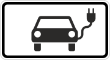 |
| SUP_GATEWAY | 47 | |
| SUP_GIVE_WAY_LEFT | 48 | 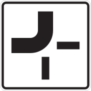 |
| SUP_GIVE_WAY_RIGHT | 49 | |
| SUP_GRAVEL | 50 | |
| SUP_HAZMAT | 51 | 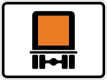 |
| SUP_HAZ_WATER | 52 | |
| SUP_KIDS | 53 | |
| SUP_LOCAL_EXCEP | 54 | |
| SUP_LOW_TREE | 55 | |
| SUP_MOTORCYCLE | 56 | |
| SUP_MOTORCYCLE_EXCEPT | 57 | 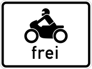 |
| SUP_NEW_ROAD_BED | 58 | |
| SUP_NO_STOP_SHOULDER | 59 | |
| SUP_OIL_TRAIL | 60 | |
| SUP_PASSENGER_CAR_EXCEPT | 61 | |
| SUP_PASSENGER_CAR_WITH_TAILER_EXCEPT | 62 | |
| SUP_PEDESTRIAN | 63 | |
| SUP_PRIORITY_TURN_LEFT | 64 |  |
| SUP_PRIORITY_TURN_RIGHT | 65 | |
| SUP_ROAD_DAMAGE | 66 | |
| SUP_RUTS | 67 | |
| SUP_TRACTOR | 68 | |
| SUP_TRACTOR_MAY_BE_OVERTAKEN | 69 | |
| SUP_TRAFFIC_JAM | 70 | |
| SUP_TRAIN | 71 | |
| SUP_TRAM | 72 | |
| SUP_TRUCK_EXCEPT | 73 | |
| SUP_TRUCK_WITH_TRAILER_EXCEPT | 74 | |
| SUP_GET_IN_PROPER_LANE | 75 | |
| SUP_ROADSIDE_TRUCK | 76 | |
| SUP_RAPPEL | 77 | |
| SUP_RADAR_ENFORCED | 78 | |
| SUP_STOP_IN_DISTANCE | 79 | The distance may be provided in the field value_and_confidence. The format should be "xxx m" or if available exact text format of sign. |
TrafficSign.TypeAndConfidence.Type
Type of the traffic sign face.
| Name | # | Description |
|---|---|---|
| UNKNOWN_TYPE | 0 | Unknown. |
| OTHER_AS_TEXT | 1 | Other, i.e. none of the listed enum values. The type, if known by the sensor, may be provided as string in the field other_text. |
| SPEED_LIMIT | 2 | The specific speed limit value may be provided in the field value_and_confidence. |
| SPEED_LIMIT_END | 3 | The specific speed limit value may be provided in the field value_and_confidence. |
| SPEED_LIMIT_CHANGE_UPCOMING | 4 | |
| ADVISORY_SPEED_LIMIT | 5 | The specific speed limit value may be provided in the field value_and_confidence. |
| ADVISORY_SPEED_LIMIT_END | 6 | The specific speed limit value may be provided in the field value_and_confidence. |
| NO_OVERTAKING | 7 | |
| NO_OVERTAKING_END | 8 | |
| PROTECTED_PASSING_START | 9 | If direction cannot be provided by sensor. |
| PROTECTED_PASSING_END | 10 | |
| PROTECTED_PASSING_LEFT_START | 11 | |
| PROTECTED_PASSING_RIGHT_START | 12 | 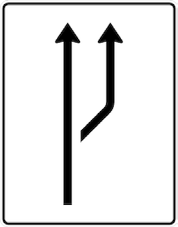 |
| PROTECTED_PASSING_LEFT_END | 13 | |
| PROTECTED_PASSING_RIGHT_END | 14 | |
| NO_OVERTAKING_TRUCK | 15 | |
| NO_OVERTAKING_TRUCK_END | 16 | |
| ALL_RESTRICTIONS_END | 17 | |
| CITY_START | 18 | |
| CITY_END | 19 | |
| HIGHWAY | 20 | Highway is a major road (e.g. US Highway, German Bundesstrasse). |
| HIGHWAY_END | 21 | |
| MOTORWAY | 22 | These roads are Class-A roads connecting cities or states (e.g. US Interstate, European E-road or German Autobahn) and in many countries have the rule of limited access. |
| MOTORWAY_END | 23 | |
| CONSTRUCTION | 24 | |
| CONSTRUCTION_END | 25 | |
| LANE_MERGE | 26 | If direction cannot be provided by sensor. |
| LANE_MERGE_ON_RIGHT | 27 | A lane right merge can also be described as a lane ending on the right side. |
| LANE_MERGE_ON_LEFT | 28 | A lane left merge can also be described as a lane ending on the left side. |
| LANE_MERGE_CENTER | 29 | A lane merge center can also be described as a lane ending on both sides left and right. |
| RAILWAY_CROSSING_GENERAL | 30 |  |
| RAILWAY_CROSSING_PROTECTED | 31 | 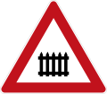 |
| RAILWAY_CROSSING_UNPROTECTED | 32 | |
| ROAD_NARROWS | 33 | If direction cannot be provided by sensor. |
| ROAD_NARROWS_LEFT | 34 | |
| ROAD_NARROWS_RIGHT | 35 | |
| ROAD_NARROWS_CENTER | 36 | |
| SHARP_CURVE | 37 | If direction cannot be provided by sensor. |
| SHARP_CURVE_LEFT | 38 | |
| SHARP_CURVE_RIGHT | 39 | |
| WINDING_ROAD | 40 | |
| WINDING_ROAD_STARTING_LEFT | 41 | |
| WINDING_ROAD_STARTING_RIGHT | 42 | |
| STEEP_HILL | 43 | |
| STEEP_HILL_UPWARDS | 44 | The percentage of the slope may be provided in the field value_and_confidence. The format is to be provided in "xx %" defining the percent of inclination per 100 meter. |
| STEEP_HILL_DOWNWARDS | 45 | The percentage of the slope may be provided in the field value_and_confidence. The format is to be provided in "xx %" defining the percent of declination per 100 meter.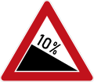 |
| STOP_SIGN | 46 | |
| LATERAL_WIND | 47 | If direction cannot be provided by sensor. |
| LATERAL_WIND_FROM_RIGHT | 48 | |
| LATERAL_WIND_FROM_LEFT | 49 | |
| GENERAL_WARNING | 50 | If information about the text of the warning is available, it may be provided in the field value_and_confidence. |
| RISK_OF_GROUNDING | 51 | |
| ANIMAL | 52 | |
| ICY_CONDITIONS | 53 | |
| SLIPPERY_ROAD | 54 |   |
| UNEVEN_ROAD | 55 | |
| SCHOOL_ZONE | 56 | |
| TRAMWAY_CROSSING | 57 | |
| CONGESTION_HAZARD | 58 | |
| ACCIDENT_HAZARD | 59 | |
| BICYCLE_CROSSING | 60 | |
| PRIORITY_OVER_ONCOMING_TRAFFIC | 61 | |
| YIELD | 62 | |
| PRIORITY_ROAD | 63 |  |
| PRIORITY_ROAD_END | 64 | |
| TRAFFIC_CALMING | 65 | |
| TRAFFIC_CALMING_END | 66 | |
| ENVIRONMENTAL_AREA | 67 | Further specification of the sign, e.g. green zone in Germany, may be provided in the field value_and_confidence. |
| ENVIRONMENTAL_AREA_END | 68 | |
| INTERSECTION | 69 | |
| ROUNDABOUT | 70 |  |
| PASSING_ON_LEFT | 71 | |
| PASSING_ON_RIGHT | 72 | |
| PASSING_ON_LEFT_OR_RIGHT | 73 | |
| MANDATORY_TURN_RIGHT_ONLY | 74 | |
| MANDATORY_TURN_LEFT_ONLY | 75 |  |
| MANDATORY_STRAIGHT_ONLY | 76 | |
| MANDATORY_TURN_LEFT_OR_RIGHT | 77 | |
| MANDATORY_TURN_RESTRICTION | 78 | If sensor is not aware of left or right restriction. |
| MANDATORY_STRAIGHT_OR_LEFT | 79 | |
| MANDATORY_STRAIGHT_OR_RIGHT | 80 | |
| NO_LEFT_TURN | 81 |  |
| NO_RIGHT_TURN | 82 | |
| NO_U_TURN | 83 | |
| NO_U_OR_LEFT_TURN | 84 | |
| U_TURN_ALLOWED | 85 | |
| MANDATORY_LEFT_TRUCK | 86 | This type is valid for trucks and other transportation vehicles. |
| MANDATORY_RIGHT_TRUCK | 87 | This type is valid for trucks and other transportation vehicles. |
| MANDATORY_STRAIGHT_TRUCK | 88 | This type is valid for trucks and other transportation vehicles. |
| NO_ENTRY | 89 |  |
| DEAD_END | 90 | |
| HIGH_OCCUPANCY_VEHICLE_LANE | 91 | |
| TOLL | 92 | |
| TOLL_CAR | 93 | |
| TOLL_LANE | 94 | |
| EXPRESS_LANE | 95 | |
| SHOULDER_OPEN_FOR_TRAFFIC | 96 | |
| SHOULDER_CLOSED_FOR_TRAFFIC | 97 | |
| LANE_CLOSED | 98 | |
| LANE_CLOSED_RIGHT_MOST_LANE | 99 | |
| LANE_CLOSED_LEFT_MOST_LANE | 100 | |
| WARNING_PEDESTRIAN | 101 | |
| WARNING_CHILDREN | 102 |  |
| WARNING_BICYCLE | 103 | |
| WARNING_BUS | 104 | |
| PUBLIC_TRANSPORTATION_STOP | 105 | |
| PEDESTRIAN_CROSSING | 106 | Directly at the sign, not the "warning of crossing ahead". |
| WEIGHT_RESTRICTION | 107 | The weight limitation may be provided in the field value_and_confidence. The format is to be provided in "xx t" defining the weight in xx tons or "xxxxxx lbs" defining the weight in x pounds. |
| HEIGHT_RESTRICTION | 108 | The height limitation, e.g. when driving under a bridge, may be provided in the field value_and_confidence. The format is to be provided in "xx.x m" defining the height in xx.x meter or "xx f yy in" defining the height in xx foot and yy inches.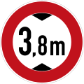 |
| LENGTH_RESTRICTION | 109 | The length limitation may be provided in the field value_and_confidence. The format is to be provided in "xx.x m" defining the length in xx.x meter or "xx f yy in" defining the height in xx foot and yy inches. |
| WIDTH_RESTRICTION | 110 | The width limitation may be provided in the field value_and_confidence. The format is to be provided in "xx.x m" defining the width in xx.x meter or "xx f yy in" defining the height in xx foot and yy inches. |
| WARNING_TRUCK_ROLLOVER | 111 | |
| SIGNAL_AHEAD | 112 | 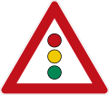 |
| SKI_CROSSING | 113 | |
| NO_AGRICULTUR_VEHICLE | 114 | |
| NO_BICYCLE | 115 | |
| NO_BUS | 116 | |
| NO_HAUL_EXPLOSIVES | 117 | |
| NO_HAUL_HARMFUL_TO_WATER | 118 | |
| NO_HAUL_HAZARDOUS_MATERIAL | 119 | |
| NO_MOTORCYCLE | 120 | |
| NO_TRAILER | 121 | |
| NO_TRUCK_WITH_TRAILER | 122 | |
| PARK_AND_RIDE | 123 | |
| ROAD_DISTANCE | 124 | These signs are typical mounted on a periodical distance. The distance value itself may be provided in the field value_and_confidence. The format is to be provided in "xxx.x" defining the distance offset value in xxx.x, which is to be used without units to represent both kilometer and miles. |
| EMERGENCY_PHONE | 125 |  |
| SPEED_LIMIT_ENFORCEMENT | 126 | |
| TRAFFIC_LIGHT_ENFORCEMENT | 127 | |
| BOARD_DIRECTION | 128 | Sign board showing direction or distance to a city, location or exit. |
| STREET_NAME | 129 | Street name - street name text provided on sign can be specified in value_and_confidence. |
| TRUCK_SPEED_LIMIT | 130 | Speed limit only valid for trucks. The specific speed limit value may be provided in the field value_and_confidence. However, speed limit start and supplementary sign TRUCK should be preferred if two signs are mounted on sign post. |
| TRUCK_SPEED_LIMIT_END | 131 | Speed limit only valid for trucks. The specific speed limit value may be provided in the field value_and_confidence. However, speed limit start and supplementary sign TRUCK should be preferred if two signs are mounted on sign post. |
| SPEED_LIMIT_NIGHT | 132 | Speed limit only valid at night. The specific speed limit value may be provided in the field value_and_confidence. However, speed limit start and supplementary type NIGHT should be preferred if two signs are mounted on sign post. |
| SPEED_LIMIT_NIGHT_END | 133 | Speed limit only valid at night. The specific speed limit value may be provided in the field value_and_confidence. However, speed limit start and supplementary type NIGHT should be preferred if two signs are mounted on sign post. |
| MINIMUM_SPEED | 134 | |
| MINIMUM_SPEED_END | 135 | |
| PEDESTRIAN_ZONE | 136 | |
| PEDESTRIAN_ZONE_END | 137 | |
| PEDESTRIAN_PATH | 138 | |
| PEDESTRIAN_PATH_END | 139 | |
| PEDESTRIAN_BICYCLE_PATH | 140 | |
| PEDESTRIAN_BICYCLE_PATH_END | 141 | |
| BICYCLE_PATH | 142 | |
| BICYCLE_PATH_END | 143 | |
| BICYCLE_STREET | 144 | |
| BICYCLE_STREET_END | 145 | |
| CURVE_LEFT_THEN_RIGHT | 146 | |
| CURVE_RIGHT_THEN_LEFT | 147 | |
| CURVE_TRIPLE_HAIRPIN | 148 | |
| STEEP_DROP | 149 | |
| STEEP_DROP_ON_LEFT | 150 |  |
| STEEP_DROP_ON_RIGHT | 151 | |
| NO_ANIMAL_CATTLE | 152 |  |
| ANIMAL_DEER | 153 | |
| ANIMAL_MOOSE | 154 | |
| NO_HORSE_RIDING | 155 | |
| FALLING_ROCKS | 156 | 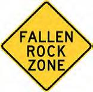 |
| FALLING_ROCKS_LEFT | 157 | 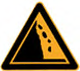 |
| FALLING_ROCKS_RIGHT | 158 | |
| YIELD_TO_ONCOMING_TRAFFIC | 159 | |
| UNPROTECTED_LEFT_TURN | 160 |  |
| ONEWAY_TRAFFIC | 161 | If sensor is not aware of left or right restriction. |
| ONEWAY_TRAFFIC_TO_LEFT | 162 | |
| ONEWAY_TRAFFIC_TO_RIGHT | 163 | |
| ONEWAY_TRAFFIC_TO_STRAIGHT | 164 | |
| NO_VEHICLE | 165 |  |
| NO_MOTOR_VEHICLE | 166 | |
| NO_TRUCK | 167 | |
| NO_PEDESTRIAN | 168 | |
| LANE_USED_IN_BOTH_DIRECTIONS | 169 | |
| FOG_AREA | 170 | |
| TIRE_CHAINS_MANDATORY | 171 | |
| HIJACKING_HOTSPOT | 172 | |
| OVERPASS_AHEAD | 173 | |
| TUNNEL | 174 | |
| FERRY_TERMINAL | 175 | |
| NARROW_BRIDGE | 176 | |
| NO_IDLING | 177 | |
| HUMPBACK_BRIDGE | 178 | |
| EMBANKMENT | 179 | If sensor is not aware of left or right restriction. |
| EMBANKMENT_ON_THE_LEFT | 180 | |
| EMBANKMENT_ON_THE_RIGHT | 181 |  |
| CROSSING_WITH_PRIORITY_OVER_MINOR_ROAD | 182 | |
| CROSSING_WITH_PRIORITY_TO_THE_RIGHT | 183 | 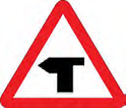 |
| BRANCH_TO_THE_LEFT | 184 | |
| BRANCH_TO_THE_RIGHT | 185 | |
| TWO_WAY_TRAFFIC | 186 |  |
| BUMP | 187 | |
| DIP | 188 | |
| ROAD_FLOODED | 189 | |
| AUDIBLE_WARNING | 190 | |
| VILLAGE_AHEAD | 191 | |
| MOVABLE_BRIDGE | 192 |  |
| SLOW_DOWN | 193 | |
| INTERSECTION_T | 194 | If sensor is not aware of left or right restriction. |
| INTERSECTION_T_LEFT | 195 | |
| INTERSECTION_T_RIGHT | 196 | |
| INTERSECTION_T_LEFT_RIGHT | 197 | |
| INTERSECTION_Y | 198 | |
| USE_LOW_GEAR | 199 | |
| USE_LOW_GEAR_END | 200 | |
| NO_COMPRESSION_BRAKING | 201 | |
| NO_COMPRESSION_BRAKING_END | 202 | |
| WAITING_LINE | 203 | |
| DONT_STOP_ZONE | 204 | |
| HONKING_PROHIBITED | 205 | |
| FASTEN_SEAT_BELT | 206 | |
| HAMLET_ENTRY | 207 | |
| HAMLET_EXIT | 208 | |
| HIGHWAY_MARKER_1_STRIPE | 209 | |
| HIGHWAY_MARKER_2_STRIPES | 210 | |
| HIGHWAY_MARKER_3_STRIPES | 211 | |
| GUIDING_BEACON | 212 | |
| COUNTDOWN_MARKER_1_STRIPE | 213 | |
| COUNTDOWN_MARKER_2_STRIPES | 214 | |
| COUNTDOWN_MARKER_3_STRIPES | 215 | |
| DIVERSION_ROUTE | 216 | |
| DIVERSION_ROUTE_END | 217 | |
| NO_STOPPING_EXCEPT_TAXI | 218 | |
| NO_STOPPING | 219 | |
| NO_STOPPING_LEFT | 220 | |
| NO_STOPPING_RIGHT | 221 | |
| NO_STOPPING_LEFT_AND_RIGHT | 222 | |
| NO_PARKING | 223 | If sensor is not aware of left or right restriction, or was not present on sign. |
| NO_PARKING_LEFT | 224 | |
| NO_PARKING_RIGHT | 225 | |
| NO_PARKING_LEFT_AND_RIGHT | 226 | |
| RUNNAWAY_TRUCK_RAMP | 227 | |
| TURN_ON_GREEN | 228 | |
| NO_TURN_ON_RED | 229 | |
| MOTORWAY_ROAD_NUMBER | 230 | |
| HIGHWAY_ROAD_NUMBER | 231 | |
| HIGHWAY_INTERCHANGE_NUMBER | 232 | |
| EUROPEAN_ROAD_NUMBER | 233 | |
| SPEED_LIMIT_ZONE | 234 | |
| SPEED_LIMIT_ZONE_END | 235 |  |
| NO_PARKING_ZONE | 236 | |
| NO_PARKING_ZONE_END | 237 | |
| PARKING_ZONE | 238 | |
| PARKING_ZONE_END | 239 | 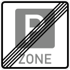 |
| PARKING | 240 | If sensor is not aware of left or right restriction, or was not present on sign. |
| PARKING_TO_LEFT | 241 | |
| PARKING_TO_RIGHT | 242 | |
| PARKING_GARAGE | 243 | |
| PARKING_ON_SIDEWAY | 244 | |
| SAFETY_DISTANCE | 245 | |
| SAFETY_DISTANCE_VEHICLE | 246 | |
| SAFETY_DISTANCE_TRUCK | 247 | |
| DETOUR | 248 | If sensor is not aware of left or right restriction. |
| DETOUR_END | 249 | |
| DETOUR_LEFT | 250 | |
| DETOUR_RIGHT | 251 | |
| STATION_GAS | 252 | |
| STATION_LPG | 253 | |
| STATION_CNG | 254 | |
| STATION_H2 | 255 | |
| STATION_ELECTRO | 256 | |
| STATION_POLICE | 257 | |
| CAMPING_SPOT | 258 | |
| RESTROOMS | 259 | |
| INFO_POINT | 260 | |
| MOTORWAY_EXIT_AHEAD | 261 | |
| HIGHWAY_EXIT_AHEAD | 262 | |
| MOTORWAY_EXIT | 263 | |
| HIGHWAY_EXIT | 264 | |
| FIRST_AID | 265 | |
| LOW_FLYING | 266 | |
| LANE_SHIFT | 267 | If sensor is not aware of left or right restriction. |
| LANE_SHIFT_TO_LEFT | 268 | 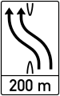 |
| LANE_SHIFT_TO_RIGHT | 269 | |
| PEDESTRIAN_UNDERPASS | 270 | |
| PEDESTRIAN_OVERPASS | 271 | |
| BREAKDOWN_BAY | 272 | |
| BUS_LANE | 273 | |
| DOUBLE_HAIRPIN | 274 | |
| COUNTRY_SPECIFIC_INFORMATION | 275 | |
| PEDESTRIAN_BICYCLE_SHARED_PATH | 276 | |
| OVERHEAD_LANE_CONTROL_CLOSED | 277 | |
| OVERHEAD_LANE_CONTROL_OPEN | 278 | |
| OVERHEAD_LANE_CONTROL_CLOSING_LEFT | 279 | Left lane is closing, hence arrow points to the right. |
| OVERHEAD_LANE_CONTROL_CLOSING_RIGHT | 280 | Right lane is closing, hence arrow points to the left. |
| OVERHEAD_LANE_CONTROL_FLASH_ARROW_LEFT | 281 | Arrow pointing to left side and flashing. |
| OVERHEAD_LANE_CONTROL_FLASH_ARROW_RIGHT | 282 | Arrow pointing to right side and flashing. |
| TRINATURE | 283 | |
| ANIMAL_FROG | 284 | |
| GRAVEL | 285 | |
| WARNING_PEDESTRIAN_CROSSING | 286 | |
| LOW_TREE | 287 | |
| WARNING_RIDER | 288 | |
| STOP_AHEAD | 289 | |
| YIELD_AHEAD | 290 | |
| WATER_PROTECTION_AREA | 291 | |
| TOLL_DOUANE | 292 | |
| NO_CAR_OR_BIKE | 293 | |
| DRIVING_DIRECTION_ONLY_UP | 294 | |
| DRIVING_DIRECTION_UP_AND_DOWN | 295 | |
| MILITARY_SIGN | 296 | |
| SMOG | 297 | |
| ROUNDABOUT_AHEAD | 298 | |
| MANDATORY_LEFT_OR_STRAIGHT_OR_RIGHT | 299 | |
| DEAD_END_RIGHT | 300 | |
| DEAD_END_LEFT | 301 | |
| TOLL_TRUCK | 302 | |
| TOLL_TRUCK_END | 303 | |
| STAGGERED_JUNCTION | 304 | |
| AXLE_WEIGHT_RESTRICTION | 305 | |
| TOLL_END | 306 | A sign notifying the general end of a toll-road. |
| TOLL_CAR_END | 307 | A sign notifying the end of a toll-road for cars. |
| TOLL_LANE_END | 308 | A sign notifying the end of a toll-lane. |
TrafficSign.ValidationAndConfidence.Type
Type.
| Name | # | Description |
|---|---|---|
| UNKNOWN_TYPE | 0 | Unknown. |
| VALID | 1 | Traffic sign is observed as valid, i.e. traffic sign is not temporary invalidated due to road construction (e.g. crossed out by red marker). |
| INVALID | 2 | Traffic sign is observed as invalid, i.e. if the sign is temporary invalidated due to a road construction (e.g. crossed out by red marker). |
sensoris/protobuf/categories/weather.proto
sensoris.protobuf.categories.weather
sensoris.protobuf.categories.weather
Precipitation
Precipitation describes precipitation type and intensity (either as a percentage or mm/h).
| Field | Type | Description |
|---|---|---|
| envelope | sensoris.protobuf.types.base.EventEnvelope | Event envelope. |
| detection_status | sensoris.protobuf.types.base.EventDetectionStatus | Event detection status. |
| type_and_confidence | Precipitation.TypeAndConfidence | Type and confidence of type. If type is NONE, then intensity shall not be set. |
| relative_intensity_and_accuracy |
sensoris.protobuf.types.base.Int64ValueAndAccuracy
Unit
Percent Resolution
1 Range
(0, 100] |
Intensity as percentage of maximum intensity. Intensity as percentage is non-standardized and may vary, e.g. depending on sensor manufacturer, software and hardware version, or mounting position. |
| absolute_intensity_and_accuracy |
sensoris.protobuf.types.base.Int64ValueAndAccuracy
Unit
MilliMeter per Hour Resolution
0.1 Range
(0, ) |
Intensity. |
Precipitation.TypeAndConfidence
Type and confidence of type.
Example: Precipitation type identified as RAIN, with 50 % confidence.
| Field | Type | Description |
|---|---|---|
| type | Precipitation.TypeAndConfidence.Type | Type |
| confidence | sensoris.protobuf.types.base.Confidence | Confidence of type. |
WeatherCategory
Weather category.
| Field | Type | Description |
|---|---|---|
| envelope | sensoris.protobuf.types.base.CategoryEnvelope | Envelope. |
| precipitation | repeated Precipitation | Precipitation. |
Precipitation.TypeAndConfidence.Type
Type.
| Name | # | Description |
|---|---|---|
| UNKNOWN_TYPE | 0 | Unknown. |
| NONE | 1 | No precipitation. |
| RAIN | 2 | Rain. |
| MIXED_RAIN_SNOW | 3 | Mixed rain and snow. |
| SNOW | 4 | Snow. |
| HAIL | 5 | Hail, sleet or freezing rain. |
sensoris/protobuf/types/base.proto
sensoris.protobuf.types.base
sensoris.protobuf.types.base
AbsoluteInt64Histogram
Absolute histogram of int64 values, i.e. bins contain absolute number of total number of elements.
| Field | Type | Description |
|---|---|---|
| timestamp_interval | TimestampInterval | Timestamp interval. |
| total_elements |
google.protobuf.Int64Value
Unit
1 Resolution
1 Range
[1, ) |
Total elements. |
| bin | repeated AbsoluteInt64Histogram.Bin | Bin. |
| upper_endpoint_inclusive | google.protobuf.Int64Value | Upper endpoint of last bin. |
AbsoluteInt64Histogram.Bin
Bin. The range of a bin is defined as [lower_endpoint_inclusive, lower_endpoint_inclusive of following bin). The range of the last bin is defined as [lower_endpoint_inclusive, upper_endpoint_inclusive]. The corresponding exponent to the attribute is also used for the bin-values.
Example: Unequal sized bins [0, 10) [10, 40) [40, 50].
| Field | Type | Description |
|---|---|---|
| lower_endpoint_inclusive | google.protobuf.Int64Value | Lower end point of bin. |
| frequency |
google.protobuf.Int64Value
Unit
1 Resolution
1 Range
[0, ) |
Absolute frequency. |
CategoryEnvelope
Category envelope is the mandatory first field of each category.
| Field | Type | Description |
|---|---|---|
| extension | repeated google.protobuf.Any | Proprietary extension. A category proprietary extension provides an additional event type, that is not part of the SENSORIS specification. |
Confidence
Confidence.
| Field | Type | Description |
|---|---|---|
| value |
int64
Unit
Percent Resolution
1 Range
(0, 100] |
Value. |
CountAndConfidence
Count and confidence.
| Field | Type | Description |
|---|---|---|
| count |
google.protobuf.Int64Value
Unit
1 Resolution
1 Range
[1, ) |
Count. |
| confidence | Confidence | Confidence of count. |
Entity
Entity.
| Field | Type | Description |
|---|---|---|
| primary_id | google.protobuf.StringValue | First level identifier. |
| secondary_id | google.protobuf.StringValue | Second level identifier. |
| type | google.protobuf.StringValue | Type. |
| software_version | Version | Software version. |
| hardware_version | Version | Hardware version. |
| extension | repeated google.protobuf.Any | Proprietary extension. |
EventDetectionStatus
Event detection status.
| Field | Type | Description |
|---|---|---|
| type | EventDetectionStatus.Type | Type. |
| confidence | Confidence | Confidence of type. |
EventEnvelope
Event envelope is the mandatory first field of each event.
| Field | Type | Description |
|---|---|---|
| id |
google.protobuf.Int64Value
Unit
1 Resolution
1 Range
[1, ) |
Identifier, shall be unique for all events in a data message. |
| timestamp | Timestamp |
Timestamp.
This is the timestamp of when the event has been detected. In case of a longer identification cycle, the actual timestamp of detection needs to be back-calculated.
Example: At time t = 10, a traffic sign is observed with the camera sensor. At time t = 15, the processing unit calculates the existence and position of the traffic sign, then the traffic sign event with t = 10 is to be created, so that the relative position fits to the localization of the vehicle at t = 10 in the sensoris.protobuf.categories.localization.VehiclePositionAndOrientation event.
|
| extension | repeated google.protobuf.Any | Proprietary extension. An event proprietary extension provides additional information for the specific event, e.g. provides metadata for the set event fields or adds additional information that is not part of the SENSORIS specification. |
Int64GaussianDistribution
Gaussian distribution of int64 values.
| Field | Type | Description |
|---|---|---|
| timestamp_interval | TimestampInterval | Timestamp interval. |
| mean | google.protobuf.Int64Value | Mean. |
| variance | google.protobuf.Int64Value | Variance. |
Int64Matrix3x3
Matrix of int64 values with dimension of 3 horizontal rows x 3 vertical columns.
| Field | Type | Description |
|---|---|---|
| a11 | google.protobuf.Int64Value | |
| a12 | google.protobuf.Int64Value | |
| a13 | google.protobuf.Int64Value | |
| a21 | google.protobuf.Int64Value | |
| a22 | google.protobuf.Int64Value | |
| a23 | google.protobuf.Int64Value | |
| a31 | google.protobuf.Int64Value | |
| a32 | google.protobuf.Int64Value | |
| a33 | google.protobuf.Int64Value |
Int64StatisticMeasure
Statistic measure of int64 value.
| Field | Type | Description |
|---|---|---|
| timestamp_interval | TimestampInterval | Timestamp interval. |
| type | StatisticMeasureType | Type. |
| value | int64 | Value. |
Int64StatisticMeasureAndAccuracy
Statistic measure of int64 value and accuracy.
| Field | Type | Description |
|---|---|---|
| timestamp_interval | TimestampInterval | Timestamp interval. |
| type | StatisticMeasureType | Type. |
| value | int64 | Value. |
| accuracy | google.protobuf.Int64Value | Accuracy. |
Int64Value
Int64 value that is either one int64 value or provides statistics of several int64 values.
| Field | Type | Description |
|---|---|---|
| value | int64 | Value. |
| statistic_measure | Int64StatisticMeasure | Statistic measure. |
| absolute_histogram | AbsoluteInt64Histogram | Absolute histogram. |
| relative_histogram | RelativeInt64Histogram | Relative histogram. |
| gaussian_distribution | Int64GaussianDistribution | Gaussian distribution. |
Int64ValueAndAccuracy
Int64 value that is either one int64 value and it's accuracy or provides statistics of several int64 values.
| Field | Type | Description |
|---|---|---|
| value_and_accuracy | Int64ValueAndAccuracy.ValueAndAccuracy | Value and accuracy. |
| statistic_measure_and_accuracy | Int64StatisticMeasureAndAccuracy | Statistic measure and accuracy. |
| absolute_histogram | AbsoluteInt64Histogram | Absolute histogram. |
| relative_histogram | RelativeInt64Histogram | Relative histogram. |
| gaussian_distribution | Int64GaussianDistribution | Gaussian distribution. |
Int64ValueAndAccuracy.ValueAndAccuracy
Int64 value and accuracy.
| Field | Type | Description |
|---|---|---|
| value | int64 | Value. |
| accuracy | google.protobuf.Int64Value | Accuracy. |
RelativeInt64Histogram
Relative histogram of int64 values, i.e. bins contain relative percentage of total number of elements.
| Field | Type | Description |
|---|---|---|
| timestamp_interval | TimestampInterval | Timestamp interval. |
| total_elements |
google.protobuf.Int64Value
Unit
1 Resolution
1 Range
[1, ) |
Total elements. |
| bin | repeated RelativeInt64Histogram.Bin | Bin. |
| upper_endpoint_inclusive | google.protobuf.Int64Value | Upper endpoint of last bin. |
RelativeInt64Histogram.Bin
Bin. The range of a bin is defined as [lower_endpoint_inclusive, lower_endpoint_inclusive of following bin). The range of the last bin is defined as [lower_endpoint_inclusive, upper_endpoint_inclusive]. The corresponding exponent to the attribute is also used for the bin-values.
Example: Unequal sized bins [0, 10) [10, 40) [40, 50].
| Field | Type | Description |
|---|---|---|
| lower_endpoint_inclusive | google.protobuf.Int64Value | Lower end point of bin. |
| relative_frequency |
google.protobuf.Int64Value
Unit
Percent Resolution
0.1 Range
[0, 100] |
Relative frequency. |
Timestamp
Timestamp. Timestamp may be also used to model duration.
| Field | Type | Description |
|---|---|---|
| posix_time |
google.protobuf.Int64Value
Unit
MilliSecond Resolution
1 Range
[0, ) |
POSIX time in milliseconds. |
| posix_time_fraction |
google.protobuf.Int64Value
Unit
MicroSecond Resolution
1 Range
[0, 1000) |
Microseconds fraction of POSIX time. |
TimestampInterval
Version
Version.
| Field | Type | Description |
|---|---|---|
| major |
google.protobuf.Int64Value
Unit
1 Resolution
1 Range
[0, ) |
Major version. |
| minor |
google.protobuf.Int64Value
Unit
1 Resolution
1 Range
[0, ) |
Minor version. |
| patch |
google.protobuf.Int64Value
Unit
1 Resolution
1 Range
[0, ) |
Patch version. |
| name | google.protobuf.StringValue | Name. |
EventDetectionStatus.Type
Type.
| Name | # | Description |
|---|---|---|
| UNKNOWN_TYPE | 0 | Unknown. |
| EXPECTED_AND_DETECTED | 1 | Expected and detected by vehicle. |
| EXPECTED_AND_NOT_DETECTED | 2 | Expected and not detected by vehicle, without further specification of the reason for the non detection. |
| EXPECTED_AND_NOT_DETECTED_ACCESS_BLOCKED | 3 | Expected and not detected by vehicle due to blocked access, e.g. vision of camera sensor to expected event is blocked. |
| EXPECTED_AND_NOT_DETECTED_ACCESS_AVAILABLE | 4 | Expected and not detected by vehicle although access is not blocked, e.g. vision of camera sensor to expected event is free. |
| NOT_EXPECTED_AND_DETECTED | 5 | Not expected and detected by vehicle. |
StatisticMeasureType
Type of statistic measure.
| Name | # | Description |
|---|---|---|
| UNKNOWN_STATISTIC_MEASURE_TYPE | 0 | Unknown. |
| MINIMUM | 1 | Minimum. |
| MAXIMUM | 2 | Maximum. |
| AVERAGE | 3 | Average. |
| MEDIAN | 4 | Median. |
SystemStatus
System status.
| Name | # | Description |
|---|---|---|
| UNKNOWN_SYSTEM_STATUS | 0 | Unknown. |
| ACTIVE | 1 | Active, i.e. system is on and controls vehicle. |
| INACTIVE | 2 | Inactive, i.e. system is on and doesn't control vehicle. |
| DISABLED | 3 | Disabled, i.e. system is off, e.g. disabled by driver. |
sensoris/protobuf/types/source.proto
sensoris.protobuf.types.source
sensoris.protobuf.types.source
NavigationSatelliteSystem
Navigation satellite system.
| Field | Type | Description |
|---|---|---|
| satellite_system | repeated NavigationSatelliteSystem.SatelliteSystem | Satellite system. |
| satellite_based_augmentation_system | repeated NavigationSatelliteSystem.SatelliteBasedAugmentationSystem | Satellite based augmentation system. |
| ground_based_augmentation_system | repeated NavigationSatelliteSystem.GroundBasedAugmentationSystem | Ground based augmentation system. |
| elevation_mask |
google.protobuf.Int64Value
Unit
Degree Resolution
1 Range
[0, 90) |
Elevation mask. All satellites that have an elevation below the elevation mask are not used for determination of positions. |
| antenna_offset_and_accuracy | sensoris.protobuf.types.spatial.XyzVectorAndAccuracy |
3 D vector describing the offset from the SENSORIS vehicle coordinate system reference point to the GNSS antenna reference point.
If the antenna offset is set, then all GNSS positions measured by the sensor shall be transformed to the SENSORIS vehicle coordinate system by applying the antenna offset and the corresponding vehicle rotation.
Example: Value of (x = 0, y = 0, z = 1 m) corresponds to a GNSS antenna reference point being exactly 1 meter above the SENSORIS vehicle coordinate system reference point.
|
| extension | repeated google.protobuf.Any | Proprietary extension. |
Sensor
Sensor.
| Field | Type | Description |
|---|---|---|
| mounting_position_and_orientation | Sensor.MountingPositionAndOrientation | Mounting position and orientation relative to SENSORIS vehicle coordinate system. |
| navigation_satellite_system | NavigationSatelliteSystem | Navigation satellite system. |
Sensor.MountingPositionAndOrientation
Mounting position and orientation relative to SENSORIS vehicle coordinate system.
| Field | Type | Description |
|---|---|---|
| translation_and_accuracy | sensoris.protobuf.types.spatial.PositionAndAccuracy | Metric translation. |
| orientation_and_accuracy | sensoris.protobuf.types.spatial.RotationAndAccuracy | Orientation. |
SensorFusion
Sensor fusion.
| Field | Type | Description |
|---|---|---|
| sensor_id | repeated google.protobuf.Int64Value | Fused sensors referenced by their Source.id. |
Source
Source.
| Field | Type | Description |
|---|---|---|
| id |
google.protobuf.Int64Value
Unit
1 Resolution
1 Range
[1, ) |
Identifier, shall be unique for all sensors and sensor fusions in a data message. |
| entity | sensoris.protobuf.types.base.Entity |
Information about the source entity which may be a sensor or a sensor fusion software providing the information. The primary id might be the company name as the manufacturer of the sensor whereas the secondary id might be a specific name of the sensor.
Example: Values primary_id: "ABC Sensors Ltd.", secondary_id: "Mono Color Generation 8 Front", type: "Camera".
|
| sampling_frequency |
sensoris.protobuf.types.base.Int64Value
Unit
Hertz Resolution
0.001 Range
[0, ) |
Sensor sampling frequency. |
| sensor | Sensor | Sensor. |
| sensor_fusion | SensorFusion | Sensor fusion. |
| extension | repeated google.protobuf.Any | Proprietary extension. |
NavigationSatelliteSystem.GroundBasedAugmentationSystem
Ground based augmentation system.
| Name | # | Description |
|---|---|---|
| UNKNOWN_GROUND_BASED | 0 | Unknown. |
| GROUND_BASED | 1 | Any ground based augmentation system. |
| GBAS | 2 | International Civil Aviation Organization Ground-Based Augmentation System (GBAS). |
| NDGPS | 3 | United States' US Nationwide Differential GPS System (NDGPS). |
| SAPOS | 4 | German Satellitenpositionierungsdienst der deutschen Landesvermessung (SAPOS). |
| ALF | 5 | German Accurate Positioning by Low Frequency (ALF). |
| AXIO_NET | 6 | Commercial AXIO-NET. |
| VRS_NOW | 7 | Commercial VRS Now. |
| SMART_NET | 8 | Commercial SmartNet. |
NavigationSatelliteSystem.SatelliteBasedAugmentationSystem
Satellite based augmentation system.
| Name | # | Description |
|---|---|---|
| UNKNOWN_SATELLITE_BASED | 0 | Unknown. |
| SATELLITE_BASED | 1 | Any satellite based augmentation system. |
| WAAS | 2 | United States' Wide Area Augmentation System (WAAS). |
| EGNOS | 3 | European Geostationary Navigation Overlay Service (EGNOS). |
| MSAS | 4 | Japanese Multi-functional Satellite Augmentation System (MSAS). |
| QZSS_SATELLITE_BASED | 5 | Japanese Quasi-Zenith Satellite System (QZSS). |
| GAGAN | 6 | Indian GPS-aided GEO augmented navigation (GAGAN). |
| SDCM | 7 | Russian System for Differential Correction and Monitoring (SDCM). |
| SNAS | 8 | Chinese Satellite Navigation Augmentation System (SNAS). |
| WAGE | 9 | United States' Wide Area GPS Enhancement (WAGE). |
| STAR_FIRE | 10 | Commercial StarFire. |
| STAR_FIX | 11 | Commercial Starfix. |
| OMNI_STAR | 12 | Commercial OmniSTAR. |
NavigationSatelliteSystem.SatelliteSystem
Satellite system.
| Name | # | Description |
|---|---|---|
| UNKNOWN_SATELLITE_SYSTEM | 0 | Unknown. |
| GPS | 1 | United States' Global Positioning System (GPS). |
| GLONASS | 2 | Russian Global'naya Navigatsionnaya Sputnikovaya Sistema (GLONASS). |
| GALILEO | 3 | European Union Galileo positioning system (GALILEO). |
| BEIDOU_1 | 4 | Chinese BeiDou Satellite Navigation Experimental System (BeiDou-1). |
| BEIDOU_2 | 5 | Chinese BeiDou Navigation Satellite System (BDS, COMPASS, BeiDou-2). |
| NAVIC | 6 | Indian NAVigation with Indian Constellation (NAVIC). |
| QZSS | 7 | Japanese Quasi-Zenith Satellite System (QZSS). |
sensoris/protobuf/types/spatial.proto
sensoris.protobuf.types.spatial
sensoris.protobuf.types.spatial
MapLocationReference
Map location reference.
| Field | Type | Description |
|---|---|---|
| position_and_accuracy | PositionAndAccuracy | Absolute position of the map object. |
| z_level |
google.protobuf.Int64Value
Unit
1 Resolution
1 Range
[0, ) |
Map z-level at the absolute position of the map object. |
| tile_link_offset_reference | MapLocationReference.TileIdLinkIdOffset | Location reference of a map object defined by a tile id, link id and offset on link id. |
| map_object_id | MapLocationReference.TileIdObjectId | Location reference of a map object defined by a tile id and object id. |
| extension | repeated google.protobuf.Any | Proprietary extension. |
MapLocationReference.TileIdLinkIdOffset
Location reference of a map object defined by a tile id, link id and offset on link id.
| Field | Type | Description |
|---|---|---|
| tile_id |
google.protobuf.Int64Value
Unit
1 Resolution
1 Range
[1, ) |
Map tile id. |
| link_id |
google.protobuf.Int64Value
Unit
1 Resolution
1 Range
[1, ) |
Map link id. |
| offset |
google.protobuf.Int64Value
Unit
MilliMeter Resolution
1 Range
[0, ) |
Offset of the position starting from the beginning of the link id. |
| extension | repeated google.protobuf.Any | Proprietary extension. |
MapLocationReference.TileIdObjectId
Location reference of a map object defined by a tile id and object id.
| Field | Type | Description |
|---|---|---|
| tile_id |
google.protobuf.Int64Value
Unit
1 Resolution
1 Range
[1, ) |
Map tile id. |
| object_id |
google.protobuf.Int64Value
Unit
1 Resolution
1 Range
[1, ) |
Map object id. |
| extension | repeated google.protobuf.Any | Proprietary extension. |
PolylineAndAccuracy
Polyline of geographic or metric positions and metric accuracy.
| Field | Type | Description |
|---|---|---|
| position_and_accuracy | repeated PositionAndAccuracy | Polyline vertex position and accuracy. |
| extension | repeated google.protobuf.Any | Proprietary extension. |
PositionAndAccuracy
Geographic or metric position and metric accuracy.
| Field | Type | Description |
|---|---|---|
| geographic_wgs84 | PositionAndAccuracy.Geographic | Geographic position in World Geodetic System 84 (WGS84) reference system. |
| metric_vehicle | PositionAndAccuracy.Metric | Metric position in SENSORIS vehicle coordinate system. |
| metric_event_group | PositionAndAccuracy.Metric | Metric position in relative coordinate system, the reference coordinate system is the origin of the event group. |
| metric_ecef | PositionAndAccuracy.Metric | Metric position in Earth-Centered Earth-Fixed (ECEF) reference system. |
| combined_std_dev |
google.protobuf.Int64Value
Unit
MilliMeter Resolution
1 Range
[0, ) |
Accuracy as combined standard deviation of metric horizontal and metric vertical position. |
| std_dev | PositionAndAccuracy.HorizontalVerticalStdDev | Accuracy as standard deviation of metric horizontal position and metric vertical position. |
| horizontal_confidence_ellipse_vertical_std_dev | PositionAndAccuracy.HorizontalConfidenceEllipseVerticalStdDev | Accuracy as metric horizontal confidence ellipse and standard deviation of metric vertical position. |
| covariance |
sensoris.protobuf.types.base.Int64Matrix3x3
Unit
MilliMeter squared Resolution
1 Range
( , ) |
Accuracy as 3 x 3 covariance matrix of metric position of (x, x), (x, y), (x, z), (y, x), (y, y), (y, z), (z, x), (z, y), (z, z). |
| extension | repeated google.protobuf.Any | Proprietary extension. |
PositionAndAccuracy.Geographic
Geographic position in reference system.
| Field | Type | Description |
|---|---|---|
| longitude |
sensoris.protobuf.types.base.Int64Value
Unit
Degree Resolution
0.00000001 Range
[-180, 180) |
Longitude. |
| latitude |
sensoris.protobuf.types.base.Int64Value
Unit
Degree Resolution
0.00000001 Range
[-90, 90] |
Latitude. |
| altitude |
sensoris.protobuf.types.base.Int64Value
Unit
Meter Resolution
0.001 Range
( , ) |
Altitude. |
PositionAndAccuracy.HorizontalConfidenceEllipseVerticalStdDev
Accuracy as metric horizontal confidence ellipse and standard deviation of metric vertical position.
| Field | Type | Description |
|---|---|---|
| horizontal_ellipse_major |
google.protobuf.Int64Value
Unit
MilliMeter Resolution
1 Range
(0, ) |
Metric length of major axis of confidence ellipse. |
| horizontal_ellipse_minor |
google.protobuf.Int64Value
Unit
MilliMeter Resolution
1 Range
(0, ) |
Metric length of minor axis of confidence ellipse. |
| horizontal_ellipse_major_heading |
google.protobuf.Int64Value
Unit
Degree Resolution
0.01 Range
[0, 360) |
Heading of major axis of confidence ellipse, references geographic north with 0 degree north, 90 degree east, 180 degree south and 270 degree west. |
| vertical |
google.protobuf.Int64Value
Unit
MilliMeter Resolution
1 Range
[0, ) |
Standard deviation of metric vertical position. |
PositionAndAccuracy.HorizontalVerticalStdDev
Accuracy as standard deviation of metric horizontal position and vertical position.
| Field | Type | Description |
|---|---|---|
| horizontal |
google.protobuf.Int64Value
Unit
MilliMeter Resolution
1 Range
[0, ) |
Standard deviation of metric horizontal position. |
| vertical |
google.protobuf.Int64Value
Unit
MilliMeter Resolution
1 Range
[0, ) |
Standard deviation of metric vertical position. |
PositionAndAccuracy.Metric
Metric position in reference system.
| Field | Type | Description |
|---|---|---|
| x |
sensoris.protobuf.types.base.Int64Value
Unit
MilliMeter Resolution
1 Range
( , ) |
Delta on x-axis. |
| y |
sensoris.protobuf.types.base.Int64Value
Unit
MilliMeter Resolution
1 Range
( , ) |
Delta on y-axis. |
| z |
sensoris.protobuf.types.base.Int64Value
Unit
MilliMeter Resolution
1 Range
( , ) |
Delta on z-axis. |
RectangularBoxAndAccuracy
Rectangular box and accuracy. A rectangular box is defined by either - three (x, y, z) corner vectors or by - position of center point of box, orientation of box in center point and size of box in direction of x-, y- and z-axis of coordinate system defined by center point and orientation. A rectangular box may be also used to represent - a bounding box oriented to the axes of the respective coordinate system or - a two-dimensional rectangle.
| Field | Type | Description |
|---|---|---|
| corner_vectors | RectangularBoxAndAccuracy.CornerVectors | Rectangular box defined by three (x, y, z) corner vectors. |
| center_orientation_size | RectangularBoxAndAccuracy.CenterOrientationSize | Rectangular box defined by position of center point of box, orientation of box in center point and size of box in direction of x-, y- and z-axis of coordinate system defined by center point and orientation. |
| extension | repeated google.protobuf.Any | Proprietary extension. |
RectangularBoxAndAccuracy.CenterOrientationSize
Rectangular box defined by position of center point of box, orientation of box in center point and size of box in direction of x-, y- and z-axis of coordinate system defined by center point and orientation. If the orientation is not set, then the rectangular box represents a bounding box oriented to the axes of the respective coordinate system. If only two dimensions of the size are set, then the box represents a two-dimensional rectangle.
| Field | Type | Description |
|---|---|---|
| center_position_and_accuracy | PositionAndAccuracy | Position and accuracy of center point of box. |
| orientation_and_accuracy | RotationAndAccuracy | Orientation and accuracy of box in center point. |
| size_and_accuracy | XyzVectorAndAccuracy | Size and accuracy of box in direction of x-, y- and z-axis of coordinate system defined by center point as origin and orientation. The (x, y, z) values are set in the field metric origin. |
RectangularBoxAndAccuracy.CornerVectors
Rectangular box defined by three (x, y, z) corner vectors. If only two (x, y, z) corner vectors are set, then the rectangular box represents a bounding box oriented to the axes of the respective coordinate system.
| Field | Type | Description |
|---|---|---|
| first_and_accuracy | XyzVectorAndAccuracy | First (x, y, z) corner vector and accuracy. |
| second_and_accuracy | XyzVectorAndAccuracy | Second (x, y, z) corner vector and accuracy. |
| third_and_accuracy | XyzVectorAndAccuracy | Third (x, y, z) corner vector and accuracy. |
RotationAndAccuracy
Rotation as Euler angles or quaternion and accuracy as Euler angles.
| Field | Type | Description |
|---|---|---|
| euler_vehicle | RotationAndAccuracy.Euler | Euler angles yaw, pitch and roll in SENSORIS vehicle coordinate system. |
| euler_event_group | RotationAndAccuracy.Euler | Euler angles yaw, pitch and roll in relative coordinate system, the reference coordinate system is the origin of the event group. |
| quaternion_vehicle | RotationAndAccuracy.Quaternion | Quaternion in SENSORIS vehicle coordinate system. |
| quaternion_event_group | RotationAndAccuracy.Quaternion | Quaternion in relative coordinate system, the reference coordinate system is the origin of the event group. |
| combined_std_dev |
google.protobuf.Int64Value
Unit
Degree Resolution
0.01 Range
[0, 360) |
Accuracy as combined standard deviation of yaw, pitch and roll angles. |
| std_dev | RotationAndAccuracy.StdDev | Accuracy as standard deviation of yaw angle, pitch angle and roll angle. |
| covariance |
sensoris.protobuf.types.base.Int64Matrix3x3
Unit
Degree squared Resolution
0.01 Range
( , ) |
Accuracy as 3 x 3 covariance matrix of (yaw, yaw), (yaw, pitch), (yaw, roll), (pitch, yaw), (pitch, pitch), (pitch, roll), (roll, yaw), (roll, pitch), (roll, roll) angles. |
| extension | repeated google.protobuf.Any | Proprietary extension. |
RotationAndAccuracy.Euler
Euler angles yaw, pitch and roll. Rotation order is yaw, pitch and roll.
| Field | Type | Description |
|---|---|---|
| yaw |
sensoris.protobuf.types.base.Int64Value
Unit
Degree Resolution
0.01 Range
[0, 360) |
Yaw angle. |
| pitch |
sensoris.protobuf.types.base.Int64Value
Unit
Degree Resolution
0.01 Range
[0, 360) |
Pitch angle. |
| roll |
sensoris.protobuf.types.base.Int64Value
Unit
Degree Resolution
0.01 Range
[0, 360) |
Roll angle. |
RotationAndAccuracy.Quaternion
Quaternion. Usually sqrt(x^2 + y^2 + z^2 + w^2) = 1.
| Field | Type | Description |
|---|---|---|
| x |
sensoris.protobuf.types.base.Int64Value
Resolution
0.001 Range
( , ) |
Value of x. |
| y |
sensoris.protobuf.types.base.Int64Value
Resolution
0.001 Range
( , ) |
Value of y. |
| z |
sensoris.protobuf.types.base.Int64Value
Resolution
0.001 Range
( , ) |
Value of z. |
| w |
sensoris.protobuf.types.base.Int64Value
Resolution
0.001 Range
( , ) |
Value of w. |
RotationAndAccuracy.StdDev
Accuracy as standard deviation of yaw angle, pitch angle and roll angle.
| Field | Type | Description |
|---|---|---|
| yaw |
google.protobuf.Int64Value
Unit
Degree Resolution
0.01 Range
[0, 360) |
Standard deviation of yaw angle. |
| pitch |
google.protobuf.Int64Value
Unit
Degree Resolution
0.01 Range
[0, 360) |
Standard deviation of pitch angle. |
| roll |
google.protobuf.Int64Value
Unit
Degree Resolution
0.01 Range
[0, 360) |
Standard deviation of roll angle. |
RotationRateAndAccuracy
Rotation rate as change in Euler angles over time and accuracy.
| Field | Type | Description |
|---|---|---|
| yaw |
sensoris.protobuf.types.base.Int64Value
Unit
Degree per Second Resolution
0.01 Range
( , ) |
Yaw angle rate. |
| pitch |
sensoris.protobuf.types.base.Int64Value
Unit
Degree per Second Resolution
0.01 Range
( , ) |
Pitch angle rate. |
| roll |
sensoris.protobuf.types.base.Int64Value
Unit
Degree per Second Resolution
0.01 Range
( , ) |
Roll angle rate. |
| combined_std_dev |
google.protobuf.Int64Value
Unit
Degree per Second Resolution
0.01 Range
[0, ) |
Accuracy as combined standard deviation of yaw, pitch and roll angle rates. |
| std_dev | RotationRateAndAccuracy.StdDev | Accuracy as standard deviation of yaw angle rate, pitch angle rate and roll angle rates. |
| covariance |
sensoris.protobuf.types.base.Int64Matrix3x3
Unit
Degree squared per Second squared Resolution
0.01 Range
( , ) |
Accuracy as 3 x 3 covariance matrix of (yaw, yaw), (yaw, pitch), (yaw, roll), (pitch, yaw), (pitch, pitch), (pitch, roll), (roll, yaw), (roll, pitch), (roll, roll) angle rates. |
| extension | repeated google.protobuf.Any | Proprietary extension. |
RotationRateAndAccuracy.StdDev
Accuracy as standard deviation of yaw, pitch and roll angle rate.
| Field | Type | Description |
|---|---|---|
| yaw |
google.protobuf.Int64Value
Unit
Degree per Second Resolution
0.01 Range
[0, ) |
Standard deviation for yaw angle rate. |
| pitch |
google.protobuf.Int64Value
Unit
Degree per Second Resolution
0.01 Range
[0, ) |
Standard deviation for pitch angle rate. |
| roll |
google.protobuf.Int64Value
Unit
Degree per Second Resolution
0.01 Range
[0, ) |
Standard deviation for roll angle rate. |
XyzVectorAndAccuracy
Generic (x, y, z) vector and accuracy. The vector may contain one, two or three values, e.g. only a value in direction of x-axis.
| Field | Type | Description |
|---|---|---|
| metric_vehicle | XyzVectorAndAccuracy.Metric | Metric (x, y, z) values in SENSORIS vehicle coordinate system. |
| metric_event_group | XyzVectorAndAccuracy.Metric | Metric (x, y, z) values in relative coordinate system, the reference coordinate system is the origin of the event group. |
| metric_origin | XyzVectorAndAccuracy.Metric | Metric (x, y, z) values in coordinate system specified by origin and orientation defined in enclosing type. |
| combined_std_dev |
google.protobuf.Int64Value
Unit
MilliMeter Resolution
1 Range
[0, ) |
Accuracy as combined standard deviation of x, y and z values. |
| std_dev | XyzVectorAndAccuracy.StdDev | Accuracy as standard deviation of x value, y value and z value. |
| covariance |
sensoris.protobuf.types.base.Int64Matrix3x3
Unit
MilliMeter squared Resolution
1 Range
( , ) |
Accuracy as 3 x 3 covariance matrix of (x, x), (x,y ), (x, z), (y, x), (y, y), (y, z), (z, x), (z, y), (z, z) values. |
| extension | repeated google.protobuf.Any | Proprietary extension. |
XyzVectorAndAccuracy.Metric
Metric values in reference system.
| Field | Type | Description |
|---|---|---|
| x |
sensoris.protobuf.types.base.Int64Value
Unit
MilliMeter Resolution
1 Range
( , ) |
Value in direction of x-axis. |
| y |
sensoris.protobuf.types.base.Int64Value
Unit
MilliMeter Resolution
1 Range
( , ) |
Value in direction of y-axis. |
| z |
sensoris.protobuf.types.base.Int64Value
Unit
MilliMeter Resolution
1 Range
( , ) |
Value in direction of z-axis. |
XyzVectorAndAccuracy.StdDev
Accuracy as standard deviation of x value, y value and z value.
| Field | Type | Description |
|---|---|---|
| x |
google.protobuf.Int64Value
Unit
MilliMeter Resolution
1 Range
[0, ) |
Standard deviation of x value. |
| y |
google.protobuf.Int64Value
Unit
MilliMeter Resolution
1 Range
[0, ) |
Standard deviation of y value. |
| z |
google.protobuf.Int64Value
Unit
MilliMeter Resolution
1 Range
[0, ) |
Standard deviation of z value. |
google/protobuf/any.proto
google.protobuf
google.protobuf
Any
Any contains an arbitrary serialized protocol buffer message along with a URL that describes the type of the serialized message.
Protobuf library provides support to pack/unpack Any values in the form of utility functions or additional generated methods of the Any type.
The pack methods provided by protobuf library will by default use 'type.googleapis.com/full.type.name' as the type URL and the unpack methods only use the fully qualified type name after the last '/' in the type URL, for example "foo.bar.com/x/y.z" will yield type name "y.z".
| Field | Type | Description |
|---|---|---|
| type_url | string | A URL/resource name whose content describes the type of the serialized protocol buffer message. |
| value | bytes | Must be a valid serialized protocol buffer of the above specified type. |
google/protobuf/wrappers.proto
google.protobuf
google.protobuf
BoolValue
Wrapper message for bool.
| Field | Type | Description |
|---|---|---|
| value | bool | The bool value. |
BytesValue
Wrapper message for bytes.
| Field | Type | Description |
|---|---|---|
| value | bytes | The bytes value. |
Int64Value
Wrapper message for int64.
| Field | Type | Description |
|---|---|---|
| value | int64 | The int64 value. |
StringValue
Wrapper message for string.
| Field | Type | Description |
|---|---|---|
| value | string | The string value. |
Scalar Value Types
google.protobuf
google.protobuf
Scalar Value Types
Protobuf scalar value types.
| Type | Notes | C++ Type | Java Type | Python Type |
|---|---|---|---|---|
| int64 | Uses variable-length encoding. | int64 | long | int/long |
| bool | bool | boolean | boolean | |
| string | A string must always contain UTF-8 encoded or 7-bit ASCII text. | string | String | str/unicode |
| bytes | May contain any arbitrary sequence of bytes. | string | ByteString | str |